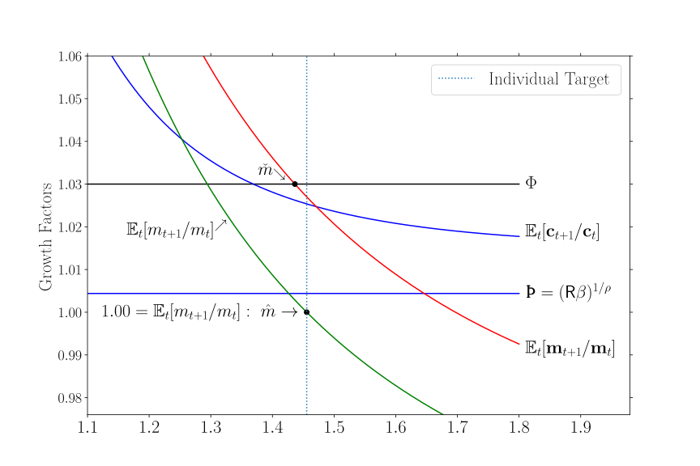
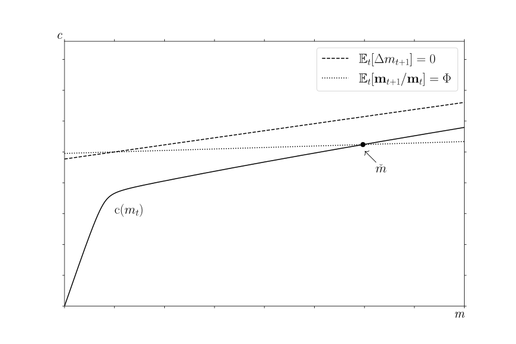
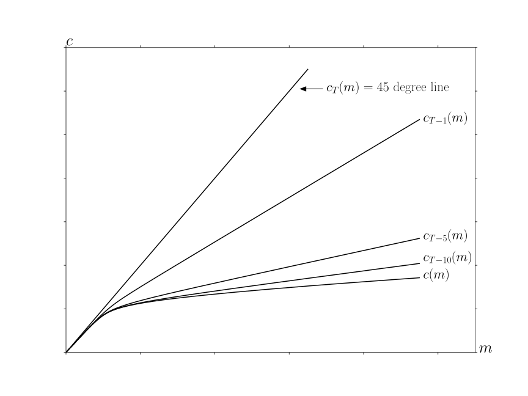
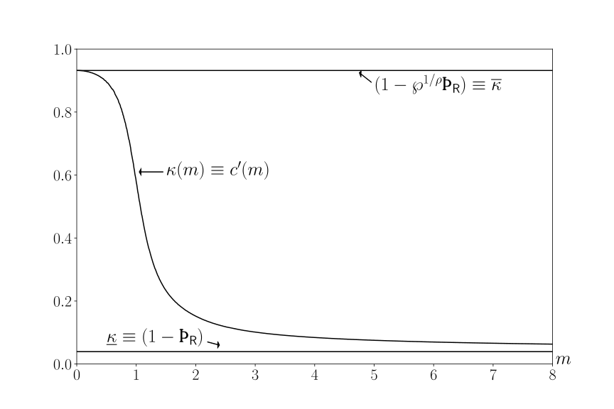
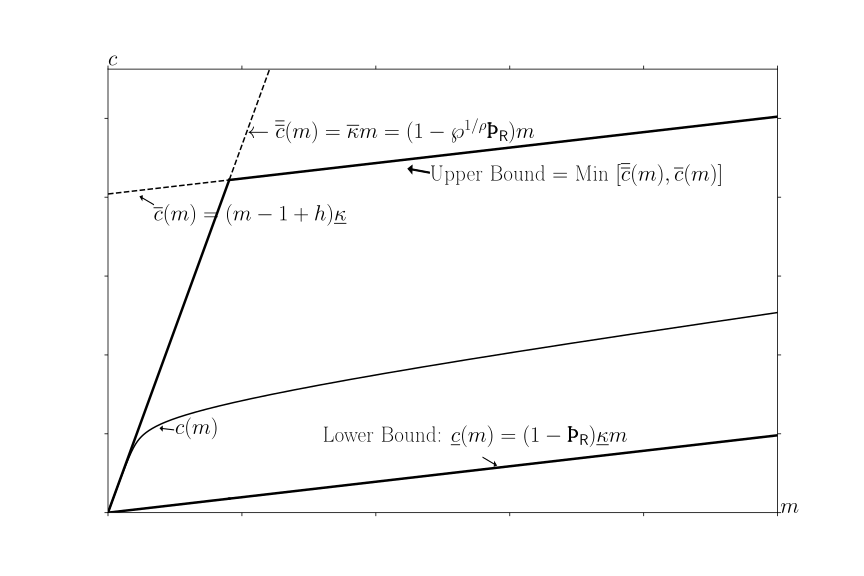
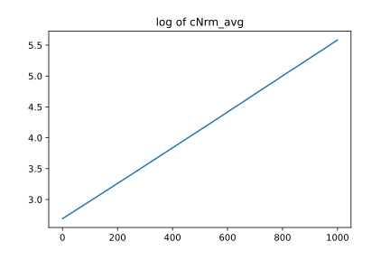
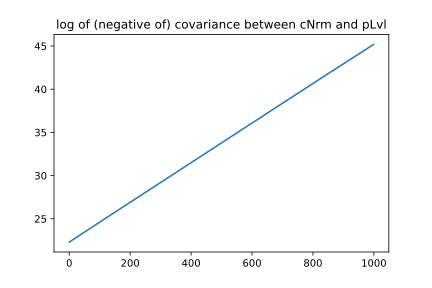

| REMARK: | https://econ-ark.org/materials/bufferstocktheory |
| Dashboard: | Click ‘Launch Dashboard’ Button |
| html: | https://llorracc.github.io/BufferStockTheory/ |
| PDF: | BufferStockTheory.pdf |
| Slides: | BufferStockTheory-Slides.pdf |
| GitHub: | https://github.com/llorracc/BufferStockTheory |
The paper’s results can be automatically reproduced using the Econ-ARK toolkit by executing the notebook; for reference to the toolkit itself see Acknowleding Econ-ARK. Thanks to the Consumer Financial Protection Bureau for funding the original creation of the Econ-ARK toolkit; and to the Sloan Foundation for funding Econ-ARK’s extensive further development that brought it to the point where it could be used for this project. The toolkit can be cited with its digital object identifier, https://doi.org/10.5281/zenodo.1001067, as is done in the paper’s own references as Christopher D. Carroll, Alexander M. Kaufman, Jacqueline L. Kazil, Nathan M. Palmer, and Matthew N. White (2018). Thanks to Will Du, James Feigenbaum, Joseph Kaboski, Miles Kimball, Qingyin Ma, Misuzu Otsuka, Damiano Sandri, John Stachurski, David Stern, Adam Szeidl, Alexis Akira Toda, Metin Uyanik, Mateo Velásquez-Giraldo, Weifeng Wu, Jiaxiong Yao, and Xudong Zheng for comments on earlier versions of this paper, John Boyd for help in applying his weighted contraction mapping theorem, Ryoji Hiraguchi for extraordinary mathematical insight that improved the paper greatly, David Zervos for early guidance to the literature, and participants in a seminar at the Johns Hopkins University, a presentation at the 2009 meetings of the Society of Economic Dynamics for their insights, and at a presentation at the Australian National University. Shanker gratefully acknowledges research support from the Australian Research Council (ARC LP190100732) and ARC Centre of Excellence in Population Ageing Research (CE17010005).
The precautionary motive to save springs from the fact that extra resources improve a consumer’s ability to buffer spending against shocks. A consumer who, in the absence of shocks, would be impatient enough to plan to spend down their resources, will (when shocks are present) experience an intensifying precautionary motive as their buffering capacity shrinks. The result of this competition between impatience and ‘prudence’ (Kimball, 1990) has been described, starting with Deaton (1991), as ‘buffer stock saving,’ with a ‘target’ defined1 as the point where the precautionary motive to accumulate becomes exactly strong enough to counter the impatience motive to decumulate.
The logic of buffer stock saving underpins key findings in heterogeneous-agent (HA) macroeconomics. For example, it can explain why, during the Great Recession, middle-class consumers cut spending more than the poor or the rich (Krueger, Mitman, and Perri, 2016). Buffer stock saving also can explain why consumption growth tracks income growth over much of the life cycle,2 rather than being determined solely by preferences and interest rates as Irving Fisher (1930) proposed.
Buffer stock saving models are neither a subset nor a superset of the closely-related class of Bewley (1977) models (or, more generically, Schectman (1976) ‘income fluctuation’ problems; we will use the terms ‘Bewley model’ and ‘income fluctuation problem’ interchangeably). That is, not all Bewley models with fluctuating income exhibit buffer stock saving, and not all models that exhibit buffer stock saving satisfy the mathematical assumptions that guarantee boundedness of marginal marginal utility imposed by Schectman or Bewley (and inherited by almost all of the subsequent literature through to the recent contributions of Ma, Stachurski, and Toda (2020, 2022a)).
The purpose of this paper is to provide a comprehensive statement and explanation of the conditions under which buffer stock saving arises in a class of problems broader in important respects than Bewley models. Specifically, we consider the problem of an agent who is subject to a Friedman-Muth(-Zeldes) income process incorporating permanent shocks to noncapital income (Friedman, 1957; Muth, 1960; Zeldes, 1989) in addition to the transitory shocks traditionally examined in the income fluctuation literature,3 and who does not face an ‘artificial’ borrowing constraint (a constraint that prohibits borrowing even when the loan could certainly be repaid).
In the course of proving our main theoretical results, we define a variety of alternative measures of ‘patience’ – an intuitive term that nonetheless has had multiple interpretations in the literature. Different measures of impatience guarantee two kinds of results: The existence of a nondegenerate limiting consumption function, and the existence of a buffer stock ‘target.’
Patience Requirements for Nondegeneracy We will define the ‘limiting’ consumption function as the limit of the sequence of consumption rules constructed by iterating backward from a terminal period T, and we will say that this limiting function is ‘nondegenerate’ if it exists, is real-valued, and is strictly positive for every reachable circumstance the consumer could be in.
When an artificial borrowing constraint is imposed and noncapital income is stationary – it is subject to no permanent shocks and exhibits no long-term growth – our problem coincides with a standard ‘income fluctuation problem.’ But our new proof methods allow us also to solve models where permanent income is unbounded above and below and there is no artificial constraint.
In the unconstrained perfect foresight version of our problem, one type of degeneracy arises if permanent income perpetually grows faster than the rate at which it is discounted: With no limiting upper bound to the PDV of future income and no borrowing constraint, there is no upper bound to limiting consumption. Imposition of a ‘Finite Human Wealth’ condition (𝒢< R) is required to prevent this. Another type of degeneracy arises if preferences fail the ‘return impatience’ condition: (Rβ)1∕γ∕R < 1. Without return impatience, the limiting consumption function is zero everywhere.
Intuition would suggest that, by activating the precautionary saving motive, introduction of the Friedman-Muth stochastic income process might necessitate a stronger degree of impatience to avoid degeneracy. In fact, we show that the required impatience condition is weaker, for reasons that follow from the lack of an artificial borrowing constraint and the presence of a ‘natural’ borrowing constraint,4 (which has the additional effect of eliminating the need to impose the Finite Human Wealth condition). We further demonstrate that the artificial constraint emerges as the limit, as a certain parameter goes to zero, of the natural constraint. This provides an intuitive conceptual bridge between the two.
In the existing literature going all the way back to Fisher (1930),5 , time preference ‘β’ and patience have often been treated as synonymous.
We show that, in the presence of nonstationary permanent income, the corresponding generalized mathematical steps yield a ‘finite value of autarky’ condition that incorporates characteristics of the growth process. The fact that the generalized condition involves terms other than β undermines the temptation to identify ‘patience’ solely with the pure time preference factor. We therefore propose that henceforth the literature should deprecate use of the term ‘patience’ unadorned with any adjective identifying precisely which kind of patience is under consideration.
The final section shows that for a consumer to have a non-degenerate value function in the limit as the planning horizon recedes, absolute patience cannot exceed both the market return factor R and the income growth factor 𝒢. (Growth impatience must hold if return impatience fails and vice-versa.) When both growth impatience and return impatience fail, the limiting consumption function is either c = 0 or c = ∞.
Patience Requirements and the Existence of Buffer Stock Targets Once we have established the existence of a non-degenerate solution, the second (and more important) main result of the paper is to identify conditions under which buffer stock ‘targets’ exist, for individual consumers or in the aggregate.
As noted by Szeidl (2013) and Ma, Stachurski, and Toda (2022a), the impatience condition (Rβ) < 1 is commonly imposed in Bewley models to guarantee existence and stability of the stochastic distributions of wealth and other variables.
The appropriate definition of a buffer stock ‘target’ turns out to depend on whether we are interested in the microeconomic behavior of individual consumers, or the aggregate behavior of the entire population of consumers. The requirement for the existence of an individual target is ‘strong growth impatience,’ (𝔼[(Rβ)1∕γ∕ ] < 1) which prevents the household’s ‘normalized market resources’ m = m∕p from growing without bound. Specifically, strong growth impatience guarantees that at some large-enough value m = it must be the case that the expectation of next period’s m is less than this period’s: (if mt > , then 𝔼t[mt+1] < mt]). This turns out to guarantee that normalized market resources eventually revert back toward a target.
A weaker requirement, ‘growth impatience,’ ensures the existence of an aggregate buffer stock target even when individual target ratios are unbounded. Growth impatience requires the ratio of absolute patience to the expected growth factor of permanent income to be less than one: (Rβ)1∕γ∕𝒢< 1.
The trick to understanding how there can be an aggregate target even when there is no individual target is to realize that one reason that m∕p can grow is that individuals can have negative shocks to p. But the people whose ratio grows because their p shrinks by definition account for a smaller portion of the level of aggregate permanent income. That is, even as their m rises they become smaller contributors to the aggregate economy.
Thus in the aggregate, even with a fixed interest rate that differs from the time preference rate, a small open economy populated by buffer stock consumers has a balanced growth path in which growth rates of consumption, income, and market resources match the exogenous growth rate of aggregate permanent income (equivalent, here, to productivity growth). In the terms of Schmitt-Grohé and Uribe (2003), buffer stock saving is an appealing method of ‘closing’ a small open economy model, because it requires no ad-hoc assumptions. Not even borrowing constraints.
Relationship to Literature Although the elements of buffer stock saving behavior were informally articulated by Friedman (1957), the term was introduced to the literature by Deaton (1991) to describe the behavior of liquidity-constrained impatient consumers with transitory income shocks.6 Carroll (1992) showed (numerically) that buffer stock saving could arise even in the absence of borrowing constraints, and defined the individual buffer stock ‘target’ as the point where a measure of normalized resources is expected to stay the same.
Traditional Bellman approaches to showing existence rely on assumptions that guarantee the boundedness of utility and marginal utility (Stokey, Lucas, and Prescott, 1989).7 . The results by Ma, Stachurski, and Toda (2020, 2022a) are the most general we are aware of that tackle income fluctuation problems, and can be specialized to show existence in a model one step away from our normalized model with a stochastic rate of return and stochastic effective discount factor. The discrepant step is that they impose an artificial constraint and positive minimum value of income; this bounds utility from below (it can never be lower than the marginal utility of consumption)d thus cannot be applied here.
Our approach to constructing the weighted-norm space of value functions uses results on unbounded dynamic programming by (Boyd, 1990).8 Our approach differs from previous approaches in its use of limiting marginal propensities to consume to construct per-period bounds on the Bellman operator. Moreover, our patience restrictions are grounded in intuitive economic ideas (rather than abstract mathematical assumptions) that arise naturally in the presence of permanent income uncertainty and growth. To the best of our knowledge, these economic mechanisms have not been explored elsewhere.
Our discussion of aggregate results builds on Szeidl (2013) and Harmenberg (2021) who give results on the existence and convergence of stationary wealth distributions that apply to the model presented here. While their conditions for stationarity resemble growth impatience and strong growth impatience, our objective is to establish existence of stable buffer stock targets, which is relatively easily tested empirically, rather than to establish stationarity of distributions, which is much harder to imagine testing with empirical data.
This section formalizes the consumer income fluctuation problem and proves the existence of a limiting non-degenerate solution. In doing so, we also introduce our consumer patience conditions and use them to derive the consumer’s MPCs. The MPCs are formulae, for any period t earlier than the terminal period T, for the maximum and minimum MPCs as wealth approaches zero and infinity. If the environment is that of an infinite-horizon ‘income fluctuation problem,’ our formulae yield the limiting upper and lower bounds of the limiting non-degenerate solution.
We first state the finite horizon problem and then define the limiting solution as the limit of finite horizon solutions as the terminal period becomes arbitrarily distant. This way, the economic intuition of limiting consumer behaviour can be directly linked to consumer behaviour in life-cycle models (see Gourinchas and Parker (2002) for an instance where buffer stock saving is discussed in the context of a life-cycle model). Nonetheless for the class of problems we consider, a non-degenerate limiting solution, if it exists, is mathematically equivalent (Bertsekas (2012), Ch. 1.) to a stationary solution to an infinite stochastic sequence problem commonly used in the literature (for example, Ma, Stachurski, and Toda (2020)). {sec:Foundations}
We start by stating the consumer problem with permanent income growth in levels and then normalize by permanent income. The normalized problem then becomes the subject of our formal results in the paper.
Our time index t can take on values in {T,T − 1,T − 2,…}. We assume that our consumer has a Constant Relative Risk Aversion (CRRA) per-period utility function, u(c) = , where γ > 1. The term β is the (strictly positive) discount factor. In each period t, the consumer faces independently and identically distributed (iid) income shocks, with the permanent shock given by ψt ∈ℝ++ and the transitory shock by t ∈ℝ+.9
In each t, the finite horizon value function for the problem in levels will be denoted by vt, with vt: ℝ++2 →ℝ. Value, v t(mt,pt), depends on two strictly positive state variables: ‘market resources’ mt and permanent income pt. After the terminal period, we assume the consumer cannot die in debt:
| (1) |
Letting vT+1 = 0, it follows that the value function for the terminal period satisfies vT = u(mT ). For t < T, the finite-horizon value functions are recursively defined by:
| (𝒫L) |
where i) ct is the level of consumption at time t, ii) 𝔼t is the expectation operator over the shocks ψt+1 and t+1, and iii) mt+1 is determined from this period’s mt and choice of ct as follows:10
The consumer’s assets at the end of t, at, translate one-for-one into capital kt+1 at the beginning of the next period. In turn, kt+1 is augmented by a fixed interest factor R to become the consumer’s financial (‘bank’) balances bt+1 = Rkt+1. ‘Market resources,’ mt+1, are the sum of financial wealth Rkt+1 and noncapital income yt+1 = pt+1t+1 (permanent noncapital income pt+1 multiplied by the transitory shock t+1). Permanent noncapital income pt+1 is derived from pt by application of a growth factor 𝒢,11 modified by the permanent income shock ψt+1,12 and the resulting idiosyncratic growth factor for permanent income is written as t+1.
Letting n denote the planning horizon, the finite-horizon problems furnish a sequence of value functions {vT ,vT−1,…,vT−n} and associated consumption functions {cT ,cT−1,…,cT−n}. The limiting consumption function, denoted by c(m,p) = lim n→∞cT−n(m,p), will be called a ‘non-degenerate limiting solution’ if neither c = 0 everywhere (for all (m,p)) nor c = ∞ everywhere.
Before turning to the normalized problem, we present the income process and its implications for the consumer problem. The following assumption defines the income process.
Assumption I.1. (Friedman-Muth Income Process). For each t: {ass:shocks}
| (2) |
for iid random variable 𝜃t, with 𝔼[𝜃t] = 1 and 𝜃t ∈ [𝜃,] s.t. 𝜃 > 0 and 𝜃 ≤ 1 ≤𝜃 < ∞.
Following Zeldes (1989), the income process incorporates a small probability ℘ that income will be zero (a ‘zero-income event’). At date T − 1, the (strictly positive) probability q of zero income in period T will prevent the consumer from spending all resources, because saving nothing would mean arriving in the following period with zero bank balances and thus facing the possibility of being required to consume 0, which would yield utility of −∞. This logic holds recursively from T − 1 back, so the consumer will never spend everything, giving rise to what Aiyagari (1994) dubbed a ‘natural borrowing constraint.’13 (Thus, the upper-bound constraint on consumption in the problem (𝒫L) will not bind.)
The model looks more special than it is. In particular, a positive probability of zero-income events may seem objectionable (despite empirical support). However, a nonzero minimum value of (motivated, say, by the existence of unemployment insurance) could be handled by capitalizing the present discounted value (PDV) of minimum income into current market assets,14 and transforming that model back into this one. And no key results would change if the transitory shocks were persistent but mean-reverting (instead of iid). Also, the assumption of a positive point mass for the worst realization of the transitory shock is inessential, but simplifies the proofs and is a powerful aid to intuition.
Let nonbold variables be the boldface counterpart normalized by pt, allowing us to reduce the number of states from two (m and p) to one (m = m∕p). Now, in a one-time deviation from the notational convention established in the last sentence, define nonbold ‘normalized value’ not as vt∕pt but as vt = vt∕pt1−γ, because this allows us to write nonbold vt, with vt: ℝ++ →ℝ, to denote the ‘normalized value function’:
| (𝒫N) |
where t+1: = (R∕ t+1) is a ‘permanent-income-growth-normalized’ return factor.15 (Appendix A.1 explains how the solution to the original problem in levels can be recovered from the normalized problem.)
The time t normalized consumption policy function for the finite-horizon problem, ct, is defined by:
| (3) |
The normalized problem’s first order condition becomes:
| (4) |
Since our main results pertain to the normalized problem, we define the limiting non-degenerate solution to the normalized problem formally.
Definition 1. (Non-degenerate Limiting Solution) 𝒫N has a non-degenerate limiting solution {def:nondegeneracy} if there exists c, with c: ℝ++ →ℝ++, and v, with v: ℝ++ →ℝ, such that:
We use 𝕋 to denote the stationary Bellman operator for the normalized problem. To define 𝕋, let : = R∕ and let 𝕋 denote the mapping vt+1vt given by Problem 𝒫N:
| (5) |
The mapping m(0,m) defines the feasibility correspondence. To define 𝕋, we excluded the boundary of the feasible values that consumption can take (0 and m) to ensure the maximand above is real-valued for all feasible values of consumption. It is straightforward to show (using the Bellman Principle of Optimality) that a finite valued solution, v, to the functional equation 𝕋v = v defines a limiting non-degenerate solution. However, because the feasibility correspondence does not include the boundary of feasible consumption, existing dynamic programming arguments cannot be used to show that such a solution (a fixed point to 𝕋) exists.
Standard dynamic programming (Stachurski, 2022) works by showing that 𝕋 is a well-defined contraction map on a Banach space, which would allow us to conclude that the sequence of value functions given by Problem 𝒫N converges to a fixed point of 𝕋, a non-degenerate solution. At first, we must contend with the fact that both u and v are unbounded below. We resolve unboundedness by constructing a weighted-norm (see below). Setting aside unboundedness, the natural liquidity constraint introduces a more pernicious challenge related to continuity: 𝕋 will not a be well defined self-map on a vector space of continuous functions. In particular, we cannot assert 𝕋 maps continuous functions to continuous functions since the feasiblility correspondence m(0,m) is not compact-valued.
Remark 1. Since the correspondence m(0,m) is not compact valued, the conditions {remark:notCompact} of Berge’s Maximum Theorem (Lemma 1, Jaśkiewicz and Nowak (2011)) fail and 𝕋f may not be continuous for continuous f.
If we reintroduce the boundary points 0 and m to the feasibility correspondence, the operator 𝕋 will be able to map upper semicontinuous functions to upper semicontinuous functions (Lemma 1, Jaśkiewicz and Nowak (2011)). However, v must now be defined on ℝ+ and take on values in ℝ+ ∪{−∞} and spaces of such functions will not be a vector space. The approach taken by Ma, Stachurski, and Toda (2022b) is to impose an artificial liquidity constraint, which yields a real-valued continuation value, even if c = m, and forces the value function to be bounded below as a function of end-of-period assets. This allows Ma, Stachurski, and Toda (2022b) to define a functional operator operator within which the feasibiltiy correspondence is the compact interval [0,m]. Without an artificial constraint, no such strategy is possible.16
A related approach, which uses Euler operators is used by Ma, Stachurski, and Toda (2020). While Ma, Stachurski, and Toda (2020) also assume an artificial liquidity constraint to bound the marginal utility of consumption, it is useful to consider how the structure of our model relates to theirs once the artificial liquidity constraint is imposed.
Remark 2. If ℘ = 0, (𝒫N) becomes a special case of Ma, Stachurski, and Toda (2020), {remark:stochdiscMST} with t+1 = R∕ t+1 corresponding to the stochastic rate of return on capital and β t+11−γ corresponding to the stochastic discount factor.
Notwithstanding Remark 2, there are important economic consequences relating consumer patience to buffer stock saving due to the fact that in our problem t+1 = R∕ t+1 is tightly tied to the ‘normalized stochastic discount factor,’ β t+11−γ; these will become apparent as we proceed.
In order to have a central reference point for them, we now collect conditions relating consumer discounting and patience to the rate of return and income growth that underpin results in the remainder of the paper. Assumptions L.1 - L.3 (finite value of autarky, return impatience and weak return impatience) will be used to prove the existence of limiting solutions in Section 2.4, and Assumptions S.1 - S.2 (growth impatience and strong growth impatience) are required for existence of alternative definitions of a stable target buffer stock in Section 3.
We start by generalizing the standard β < 1 condition to our setting with permanent income growth and uncertainty.17 The updated condition requires that the expected net discounted value of utility from consumption is finite under our definition of ‘autarky’ – where consumption is always equal to permanent income. A finite value of autarky helps guarantee that as the horizon extends, discounted value remains finite along any consumption path the consumer might choose. (See Appendix A).
We now turn to consumer patience and start with ‘absolute (im)patience.’ We will say that an unconstrained perfect foresight consumer exhibits absolute impatience if they optimally choose to spend so much today that their consumption must decline in the future. The growth factor for consumption implied by the Euler equation of a perfect foresight model is ct+1∕ct = (Rβ)1∕γ,18 which motivates our definition of an ‘absolute patience factor’ whose centrality (to everything that is to come later) justifies assigning to it a special symbol; we have settled on the archaic letter ‘thorn’:
| (6) |
We will say that (in the perfect foresight problem) ‘an absolutely impatient’ consumer is one for whom Þ < 1; that is an absolutely impatient consumer prefers to consume more today than tomorrow (and vice versa for an ‘absolutely patient’ consumer, whose consumption will grow over time):
A consumer who is absolutely impatient, Þ < 1, satisfies the standard impatience condition commonly used in the income fluctuation literature, βR < 1, which guarantees the existence of a stable asset distribution when there is no permanent income growth. However, as pointed out by Szeidl (2013) and Ma, Stachurski, and Toda (2022a), βR < 1 is not necessary for an infinite-horizon solution.
Recall now our earlier requirement that the limiting consumption function c(m) in our model must be ‘sensible.’ We will show below that for the perfect foresight unconstrained problem this requires
Return impatience can be best understood as the tension between the income effect of capital income and the substitution effect. As we show below in Section 2.3, in the perfect foresight model, it is straightforward to derive the MPC out of overall (human plus nonhuman) wealth that would result in next period’s wealth being identical to the current period’s wealth. The answer turns out to be an MPC (‘κ’) of κ = (1 −Þ∕R). The interesting point here is that κ depends both on our absolute patience factor Þ and on the return factor. This is the manifestation in this context of the interaction of the income effect (higher wealth yields higher interest income if R > 1) and the substitution effect (which we have already captured with Þ).
Next, consider the weaker condition of a consumer whose absolute patience factor is suitably adjusted to take account of the probability of zero income is less than the market return.
This condition is ‘weak’ (relative to the plain return impatience) because the probability of the zero income events ℘ is strictly less than 1. The role of ℘ in this equation is related to the fact that a consumer with zero end-of-period assets today has a probability ℘ of having no income and no assets to finance consumption (and mt+1 = 0 would yield negative infinite utility). In the case with no artificial constraint, our main results below, in Section 2.4, show weak return impatience and finite value of autarky are sufficient to guarantee a sensible (non-degenerate) solution.
Weak return impatience cannot be relaxed further without an artificial liquidity constraint. Even though ℘1∕γÞ∕R → 0 as ℘ → 0 the weak return impatience condition does not approach irrelevance as the possibility of the zero income event approaches zero. Instead, we show below in Section 2.4.3 that the limiting consumption function with a natural constraint approaches the solution to a model with an artificial constraint.
Now that we have finished discussing the requirements for a non-degenerate solution, we turn to assumptions required for stability. We will call the ratio of the Þ to the expected growth factor for permanent income 𝒢 = 𝔼[𝒢ψ]) the growthpatiencefactor:
| (7) |
as exhibiting ‘growth impatience:’
We speak of a consumer whose absolute patience factor is less than the expected growth factor for their permanent income 𝒢 = 𝔼[𝒢ψ]) as exhibiting ‘growth impatience:’
A final useful definition is ‘strong growth impatience’
| (8) |
which holds for a consumer for whom the expectation of the ratio of the absolute patience factor to the (stochastic) growth factor of permanent income is less than one,
(The difference between growth impatience and strong growth impatience is that the first is the ratio of an expectation to an expectation, while the latter is the expectation of the ratio. With non-degenerate mean-one stochastic shocks to permanent income, the expectation of the ratio is strictly larger than the ratio of the expectations).
While neither growth impatience nor return impatience will by themselves be required for the existence of a limiting solution, the finite value of autarky condition stops individuals from becoming both growth and return patient.
Claim 1. If growth impatience fails (Þ∕𝒢≥ 1) and return impatience fails (Þ∕R ≥ 1), {claim:noRICGIC} then finite value of autarky fails (β𝒢1−γ𝔼(ψ1−γ) ≥ 1).
Proof. Since Þ∕R > 1, Þ∕R satisfies:
| (9) |
Multiplying both sides by R𝒢1−γ gives us:
| (10) |
Finally, since γ > 1, applying Þ∕𝒢≥ 1 gives us the result. □
We discuss further intuition for the consumer patience conditions below when they are used in the main results.
The relationship between the conditions and their implications for consumption behaviour will also be be discussed in detail in Section 5.
To understand the economic implications of the patience conditions, we begin with the perfect foresight case.
Below, when we say we assume perfect foresight, what we mean mathematically is:
Throughout this sub-section, we assume Assumption I.2 remains in force.
Under perfect foresight, finite value of autarky reduces to a ‘perfect foresight finite value of autarky’ condition:
| (11) |
Consider the familiar analytical solution to the perfect foresight model without liquidity constraints. In this case, the consumption Euler Equation always holds as an equality; with u′(c) = c−γ and u′(c t) = Rβu′(c t+1), we have:
| (12) |
Recalling ℛ = R∕𝒢, ‘human wealth’, is the present discounted value of income:
For human wealth to have finite value, we must have:
If −1 is less than one, human wealth will be finite in the limit as T →∞ because (noncapital) income growth is smaller than the interest rate at which that income is being discounted.
Under these conditions we can define a normalized finite-horizon perfect foresight consumption function (see Appendix D.1 for details) as follows:
| (14) |
where κt is the marginal propensity to consume (MPC) and satisfies:
| (15) |
Let κ = lim n→∞κT−n. For κ to be strictly positive, we must impose return impatience. The limiting consumption function then becomes:
| (16) |
where, under return impatience, the limiting MPC becomes:
| (17) |
In order to rule out the degenerate limiting solution in which (m) = ∞, we also require (in the limit as the horizon extends to infinity) that human wealth remain bounded (that is, we require ‘finite limiting human wealth’). Thus, while return impatience prevents a consumer from saving everything in the limit, ‘finite limiting human wealth’ prevents infinite borrowing (against infinite human wealth) in the limit.
The following two results consider the normalized problem without liquidity constraints and with perfect foresight income (Assumption I.2).
Proposition 1. A non-degenerate limiting solution exists if and only if finite limiting {prop:pfUCFHWC} human wealth (ℛ−1 < 1) and return impatience (Assumption L.3) hold.
Proof. See Appendix D.1 for the proof.
Claim 2. Assume finite limiting human wealth (ℛ−1 < 1). If growth impatience {claim:PFConspC} (Assumption S.1) holds, then finite value of autarky (Assumption L.1) holds. If finite value of autarky (Assumption L.1) holds, then return impatience (Assumption L.3) holds.
Proof. See Appendix A.2 for the proof.
The claim implies that if we impose finite limiting human wealth, then growth impatience is sufficient for nondegeneracy since finite value of autarky and return impatience follow. However, there are circumstances under which return impatience and finite limiting human wealth can hold while the finite value of autarky fails. For example, if 𝒢 = 0, the problem is a standard ‘cake-eating’ problem with a non-degenerate solution under return impatience.
Our ultimate interest is in the unconstrained problem with uncertainty. Here, we show that the perfect foresight constrained solution defines a useful limit for the unconstrained problem with uncertainty.
Consider that if a liquidity constraint requiring at ≥ 0 binds at any mt, it must bind at the lowest possible level of mt, mt = 1, defined by the lower bound of having arrived into the period with bt = 0 (if the constraint were binding at any higher mt, it would certainly be binding here, because u′′ < 0 and c′ > 0). At m t = 1 the constraint binds if the marginal utility from spending all of today’s resources ct = mt = 1, exceeds the marginal utility from doing the same thing next period, ct+1 = 1; that is, if such choices would violate the Euler equation, Equation (4), yielding
| (18) |
which is just a restatement of growth impatience. So, the constraint is relevant if and only if growth impatience holds.
For the following result, consider the normalized perfect foresight problem with a liquidity constraint (that is, assume ct ≤mt for each t.)
Proposition 2. If return impatience (Assumption L.3) holds, then a non-degenerate {prop:PFCExist} solution exists. Moreover, if return impatience does not hold, then a non-degenerate solution exists if and only if growth impatience (Assumption S.1) holds.
The proof for the result follows from the discussion in Section 5.1.1, which outlines the cases under which perfect foresight liquidity constraint solutions are non-degenerate.
Importantly, if return impatience fails (R ≤Þ) and growth impatience holds (Þ < 𝒢), then finite limiting human wealth also fails (R ≤𝒢). Despite the unboundedness of human wealth as the horizon extends arbitrarily, for any finite horizon the relevant liquidity constraint prevents borrowing. Similarly, when uncertainty is present, the natural borrowing constraint plays an analogous role in permitting a finite limiting solution with unbounded limiting human wealth – we discuss the various parametric cases in Section 5.
We are now ready to return to our primary interest, the model with permanent and transitory income shocks. Throughout this section, we assume the Friedman-Muth income process (Assumption I.1 holds) and examine the normalized problem, Problem 𝒫N.
We first establish results regarding the shape of the consumption function.19
Proposition 3. For each t, ct is twice continuously differentiable, increasing and {prop:cfuncprop} strictly concave.
Proof. See Appendix A.3 for the proof.
Next, we note that the ratio of optimal consumption to market resources (c∕m) is bounded by the minimal and maximal marginal propensities to consume (MPCs). Recall that the MPCs answer the question ‘if the consumer had an extra unit of resources, how much more spending would occur?’, The minimal and maximal MPCs are the limits of the MPC as m →∞ and m → 0, which we denote by κt and κt respectively. Since the consumer spends everything in the terminal period, κT = 1 and κT = 1. Furthermore, Proposition 3 will imply:20
| (19) |
| (20) |
| (21) |
as the ‘limiting minimal and maximal MPCs’. The following result verifies that the consumption share is bounded each period by the minimal and maximal MPCs, that the consumption function is asymptotically linear and that the MPCs converge to the limiting MPCs as the terminal period recedes.21
Lemma 1. (Limiting MPCs). If weak return impatience (Assumption L.4) holds, then: {lemm:MPC}
| (22) |
Proof. See Appendix A.3 for the proof.
The MPC bound as market resources approach infinity is easy to understand. Recall that from the perfect foresight case will be an upper bound in the problem with uncertainty; analogously, κ becomes the MPC’s lower bound. As the proportion of consumption that will be financed out of human wealth approaches zero, the proportional difference between the solution to the model with uncertainty and the perfect foresight model shrinks to zero.
To understand the maximal limiting MPC, the essence of the argument is that as market resources approach zero, the overriding consideration that limits consumption is the (recursive) fear of the zero-income events — this is why the probability of the zero income event ℘ appears in the expression for the maximal MPC. Weak return impatience is too weak to guarantee a lower bound on the share of consumption to market resources; it merely prevents the upper bound on the share of consumption to market resources from approaching zero. Weak return impatience thereby prevents a situation where everyone consumes an arbitrarily small share of current market resources as the terminal period recedes. This insight plays a key role in the proof for the existence of a non-degenerate solution in what follows.
Let 𝒞(ℝ++,ℝ) be the space of continuous functions from ℝ++ to ℝ. To address the challenges posed by unbounded state-spaces, Boyd (1990) provided a weighted contraction mapping theorem. Our strategy is to use this approach to first show that while the stationary operator 𝕋 may be undefined on a suitable Banach space (recall Remark 1), operators defining each period’s problem (which we define below) will be contractions on a space of continuous functions with a finite weighted norm. We then show the sequence of finite horizon value functions given by Problem (𝒫N) generates a Cauchy sequence; since the weighted norm space is complete, the sequence of value functions converges to a non-degenerate solution in 𝒞(ℝ++,ℝ).
Definition 2. Fix f such that f ∈𝒞(ℝ++,ℝ) and let φ be a function such that φ ∈𝒞(ℝ++,ℝ) and φ > 0. The function f will be φ-bounded if the φ-norm of f, given by
| (23) |
is finite. We will call 𝒞φ(ℝ++,ℝ) the subspace of functions in 𝒞(ℝ++,ℝ) that are φ-bounded.
We define the weighting function as
| (24) |
where ζ ∈ℝ++ is a constant derived from the model primitives and the upper and lower bound on the consumption share (see Claim 5 in Appendix A.4 for the parametrization of ζ).
Next, for any lower bound ν and upper-bound ν on the share of consumption to market resources, define the ‘MPC bounded Bellman operator’ 𝕋ν,ν, with 𝕋ν,ν : 𝒞 φ →𝒞φ, as:
(25) |
The value functions defined by Problem (𝒫N) will satisfy vt = 𝕋κt,κtv t+1 for each period t, since consumption shares are bounded by the minimal and maximal MPCs (Lemma 1 and Equation (19)). We now show the operator 𝕋ν,ν is a contraction on 𝒞 φ for a suitably narrow interval [ν,ν].
Theorem 1. (Contraction Mapping Under Consumption Bounds). If weak return {thm:cmap} impatience (Assumption L.4) and finite value of autarky (Assumption L.1) hold, then there exists k and α ∈ (0, 1) such that for all [ν,ν] with κT−k ≥ν > ν > 0, 𝕋ν,ν is a contraction with modulus α.
Proof. See Appendix A.4 for the proof. □
The theorem says eventually the maximal MPCs will be small enough such that the Bellman operators generating the sequence of finite horizon value functions given by (𝒫N) are contraction maps.
We can now relate the sequence of contraction maps to the limiting solution defined in Section 2.1.1.
Theorem 2. (Existence of Non-degenerate Solution). If weak return impatience (Assumption {thm:convgtobellman} L.4) and finite value of autarky (Assumption L.1) hold, then:
| (26) |
Proof.
Item (i.)(a.) follows from Theorem 1, since 0 < ν < κT−n and for each t, κT−n ≤κT−k by Lemma 1. We now prove Item (i.)(b.), that n=0∞ converges point-wise to a limiting non-degenerate solution v. In the proof, to streamline the notation, we define tn: = T −n. Now, for all n > k + 2, vtn = 𝕋κtn,κtnv tn−1 holds by definition of Problem (𝒫N). Moreover, since κtn−1 ≥κtn by Lemma 1, we have:
| (27) |
Next, take the φ-norm distance between vtn and vtn−1, and note 𝕋κtn,κtn−1 is a contraction. As such, the sequence of finite horizon value functions satisfy:
Since 𝒞φ is a complete metric space, and vtn−2 ∈𝒞φ for each n, vtn converges to v, with v ∈𝒞φ. The proof for Item (i) and Item (ii) is continued in Appendix A.4.) □
The proof above shows that the sequence of value functions produced by the iteration of the per-period Bellman operators 𝕋κT−n,κT−n will be a Cauchy sequence converging to the limiting solution. Due to weak return impatience, the upper bound on the per-period consumption converges to a strictly positive share of market resources, preventing consumption from converging to zero.
Remark 3. Under return impatience, κT−n ≥ κ > 0 for all n, and thus for k ∈ ℕ large enough, 𝕋κ,κT−k will be a stationary contraction map and we will have vT−n = 𝕋κ,κT−kv T−n+1 for all n > k. However, without return impatience, κ = 0 and 𝕋0,κT−k will not be a well-defined operator from 𝒞 φ to 𝒞φ, even for k large enough (recall Section 2.1.2).
Finite value of autarky is the second assumption required to show existence of limiting solutions and guarantees the value is finite (in levels) for a consumer who spent exactly their permanent income every period (see Section 5.2). The intuition for the finite value of autarky condition is that, with an infinite-horizon, with any strictly positive initial amount of bank balances b0, in the limit your value can always be made greater than you would get by consuming exactly the sustainable amount (say, by consuming (r∕R)b0 −𝜖 for some arbitrarily small 𝜖 > 0).
Remark 4. Since κm ≥ cT−n(m) ≥ κm and cT−n converges point-wise to c, {remark:cStatStrctPos} κm ≥ c(m) ≥ κm. Moreover, since c satisfies Equation (26) and v ∈ 𝒞φ, c(m) > 0 for m > 0.
Finally, we verify that the converged non-degenerate consumption functions satisfies the same marginal propensities to consume the per-period consumption functions.
Lemma 2. If weak return impatience (Assumption L.4) holds, then lim m→∞c(m)∕m = {lemma:MPCBoundsConvg} κm and lim m→0c(m)∕m = κm.
Proof. See Appendix A for the proof.
Recall the common assumption (Deaton, 1991; Aiyagari, 1994; Li and Stachurski, 2014; Ma, Stachurski, and Toda, 2020) of a strictly positive minimum value of income and a non-trivial artificial liquidity constraint, namely at ≥ 0. We will refer to the set-up from Section 2.1, with Assumption 2 modified so ℘ = 0 as the “liquidity constrained problem.” Let ct(∙; ℘) be the consumption function for a problem where Assumption I.1 holds for a given fixed ℘, with ℘ > 0. Moreover, let t be the limiting consumption function for the liquidity constrained problem (note that the liquidity constraint ct ≤mt, or at ≥ 0, becomes relevant only when ℘ = 0). The discussion in Appendix A.6 shows how an finite-horizon solution to the liquidity constrained problem, t , is the limit of the problems as the probability ℘ of the zero-income event approaches zero.
Intuitively, if we impose the artificial constraint without changing ℘ and maintain ℘ > 0, it would not affect behavior. This is because the possibility of earning zero income over the remaining horizon already prevents the consumer from ending the period with zero assets. For precautionary reasons, the consumer will save something. However, the extent to which the consumer feels the need to make this precautionary provision depends on the probability that it will turn out to matter. As ℘ → 0, the precautionary saving induced by the zero-income events approaches zero, and “zero” is the amount of precautionary saving that would be induced by a zero-probability event by the impatient liquidity constrained consumer. See Appendix A.6 for the formal proof.
In this section we analyse two notions of stability which will be useful for studying either an individual or a population of individuals who behave according to the converged consumption rule. Consider an individual who at time t holds normalized and non-normalized market resources mt and mt and follows the converged decision function c. The time-t consumption for the consumer will be ct = c(mt) and the time t + 1 market resources will be a random variable mt+1 = t+1(mt−c(mt))+t+1.22 At the individual level, we are interested in whether the current level of market resources is above or below a ‘target’ level such that the magnitude of the precautionary motive (which causes a consumer to save) exactly balances the impatience motive (which makes them want to dissave). At the individual ‘target’, the expected market resources ratio in the next period, conditioned on the current market resources ratio, will be the same as the ratio in the current period. The intensifying strength of the precautionary motive with decreasing market resources can ensure stability of the target. Below the target, the urgency to save due to the precautionary motive leads to an expected rise in market resources. Conversely, above the target, impatience prevails, leading to an expected reduction of market resources. In this way, the ‘target’ essentially defines the desired ‘buffer stock’ of resources for the consumer.
To help motivate the theoretical results concerning existence of a target level of market resources, Figure 1 shows the expected growth factors for consumption, the level of market resources, and the market resources to permanent income ratio, 𝔼t[ct+1∕ct], 𝔼t[mt+1∕mt], and 𝔼t[mt+1∕mt]. The figure is generated using parameters discussed in Section 5, Table 2. First, the figure shows how as mt →∞ the expected consumption growth factor goes to Þ, indicated by the lower bound in Figure 1. Moreover, as mt approaches zero the consumption growth factor approaches ∞. The following proposition establishes the asymptotic growth factors formally.
Proof. See Appendix B.1 for the proof.
Next, consider the implications of Figure 1 for individual stability. The figure shows a value of the market resources ratio, mt = , at which point the expected growth factor of the level of market resources m matches the expected growth factor of permanent income 𝒢. A distinct and larger target ratio, , also exists. At this ratio, 𝔼t[mt+1∕mt] = 1, and the expected growth factor of consumption is less than 𝒢. Importantly, at the individual level, this model does not have a single m at which p, m and c are all expected to grow at the same rate. Yet, when we aggregate across individuals, balanced growth paths can exist, even if there does not exist a target ratio where 𝔼t[mt+1∕mt] = 1.

One kind of ‘stable’ point is a ‘target’ value such that if mt = , then 𝔼t[mt+1] = mt. Existence of such a target requires the strong growth impatience condition.
Theorem 3. (Individual Market-Resources-to-Permanent-Income Ratio Target). Consider {thm:target} the problem defined in Section 2.1. If weak return impatience (Assumption L.4), finite value of autarky (Assumption L.1) and strong growth impatience (Assumption S.2) hold, then there exists , with > 0, such that:
| (28) |
and,
| (29) |
Proof. See Appendix B.2.1 for the proof.
If satisfies (29), we say is a point of ‘stability’.
Since mt+1 = (mt − c(mt))t+1 + t+1, the implicit equation for becomes:
| (30) |
The market-resources-to-permanent-income ratio target is the most restrictive among several competing definitions of stability. Our least restrictive definition of ‘stability’ derives from a traditional aggregate question in macro models: whether or not there is a ‘balanced growth’ equilibrium in which aggregate variables (income, consumption, market resources) all grow by the same factor 𝒢. In particular, if growth impatience holds, the problem will exhibit a balanced-growth ‘pseudo-steady-state’ point, by which we mean that there is some such that if mt > , then 𝔼t[mt+1∕mt] < 𝒢. Conversely if mt < then 𝔼t[mt+1∕mt] > 𝒢. The target will be such that m growth matches 𝒢, allowing us to write the implicit equation for as follows:
| (31) |
The only difference between (31) and (30) is the substitution of ℛ for .23 ,24 Under the weaker growth impatience condition, we can verify the existence of this pseudo-steady-state market resources to permanent income ratio, .
Theorem 4. (Individual Balanced-Growth ‘Pseudo Steady State’). Consider the problem {thm:MSSBalExists} defined in Section 2.1. If weak return impatience (Assumption L.4), finite value of autarky (Assumption L.1) and growth impatience (Assumption S.1) hold, then there exists a unique , with > 0 such that:
| (33) |
Moreover, is a point of stability in the sense that:
| (34) |
Proof. See Appendix B.2.2 for the proof. □
Because the equations defining target and pseudo-steady-state m, (30) and (31), differ only by substitution of ℛ for = ℛ𝔼[ψ−1], if there are no permanent shocks (ψ ≡ 1), the conditions are identical. For many parameterizations (e.g., under the baseline parameter values used for constructing figure 1), and will not differ much.

An illuminating exception is exhibited in Figure 3, which modifies the baseline parameter values by quadrupling the variance of the permanent shocks, enough to cause failure of strong growth impatience; now there is no target level of market resources . Nonetheless, the pseudo-steady-state still exists because it turns off realizations of the permanent shock. It is tempting to conclude that the reason target does not exist is that the increase in the size of the shocks induces a precautionary motive that increases the consumer’s effective patience. The interpretation is not correct because as market resources approach infinity, precautionary saving against noncapital income risk becomes negligible (as the proportion of consumption financed out of such income approaches zero). The correct explanation is more prosaic: The increase in uncertainty boosts the expected uncertainty-modified rate of return factor from ℛ to > ℛ which reflects the fact that in the presence of uncertainty the expectation of the inverse of the growth factor increases: 𝒢> 𝒢. That is, in the limit as m →∞ the increase in effective impatience reflected in Þ∕𝒢𝔼[ψ−1] < Þ∕𝒢 is entirely due to the certainty-equivalence growth adjustment, not to a (limiting) change in precaution. In fact, the next section will show that an aggregate balanced growth equilibrium will exist even when realizations of the permanent shock are not turned off: The required condition for aggregate balanced growth is the regular growth impatience, which ignores the magnitude of permanent shocks.25
Before we get to the formal arguments, the key insight can be understood by considering an economy that starts, at date t, with the entire population at mt = , but then evolves according to the model’s assumed dynamics between t and t + 1. Equation (31) will still hold, so for this first period, at least, the economy will exhibit balanced growth: the growth factor for aggregate M will match the growth factor for permanent income 𝒢. It is true that there will be people for whom the financial balances ratio, bt+1, where bt+1 = atR∕(𝒢ψt+1), is boosted by a small draw of ψt+1. However, their contribution to the level of the aggregate variable is given by bt+1 = bt+1pt𝒢ψt+1, so their bt+1 is reweighted by an amount that exactly unwinds that divisor-boosting. This means that it is possible for the consumption-to-permanent-income ratio for every consumer to be small enough that their market resources ratio is expected to rise, and yet for the economy as a whole to exhibit a balanced growth equilibrium with a finite aggregate balanced growth steady state (this is not numerically the same as the individual pseudo-steady-state ratio because the problem’s nonlinearities have consequences when aggregated).26
In this section, we move from characterizing the individual decision rule to properties of a distribution of individuals following the converged non-degenerate consumption rule c. Assume a continuum of ex ante identical buffer-stock households, with constant total mass normalized to one and indexed by i. Szeidl (2013) proved that such a population, following the consumption rule c, will be characterized by invariant distributions of m, c, and a under the log growth impatience condition:27
| (36) |
which is stronger than our growth impatience (Þ∕𝒢< 1), but weaker than our strong growth impatience (Þ∕𝒢𝔼[ψ−1] < 1).28
Harmenberg (2021) substitutes a clever change of probability-measure into Szeidl’s proof, with the implication that under growth impatience, invariant permanent-income-weighted distributions of m and c exist. In particular, let ℱmt,pt be the joint CDF of normalized market resources and permanent income at time t.29 The permanent-income-weighted CDF of mt, mt, will be:
| (37) |
Simply put, the permanent-income-weighted CDF shows how the total ‘mass’ of permanent income is distributed along normalized market resources.30 The change of variables allows Harmenberg (2021) to prove a conjecture from an earlier draft of this paper (Carroll (2019, Submitted)) that under growth impatience, aggregate consumption grows at the same rate 𝒢 as aggregate noncapital income in the long run (with the corollary that aggregate assets and market resources grow at that same rate). Harmenberg (2021) also shows how the reformulation can reduce costs of calculation by over a factor of 100.31 The remainder of this section draws out the implications of these points for aggregate balanced growth factors.
Define 𝕄 to yield the expected value operator with respect to the empirical distribution of a variable across the population (as distinct from the operator 𝔼 which represents beliefs about the future for a given individual).32 Using boldface capitals for aggregates, the growth factor for aggregate noncapital income becomes:
Consider an economy that satisfies the Szeidl impatience condition (36) and has existed for long enough by date t that we can consider it as Szeidl-converged. In such an economy a microeconomist with a population-representative panel dataset could calculate the growth factor of consumption for each individual household, and take the average:
| (38) |
Because this economy is Szeidl-converged, distributions of ct and ct+1 will be identical, so that the second term in (38) disappears; hence, mean cross-sectional growth factors of consumption and permanent income are the same:
| (39) |
In a Harmenberg-invariant economy (and therefore also any Szeidl-invariant economy), a similar proposition holds in the cross-section as a direct implication of the fact that a constant proportion of total permanent income is accounted for by the successive sets of consumers with any particular m (recall Equation (37)). This fact is one way of interpreting Harmenberg’s definition of the density of the permanent-income-weighted invariant distribution of m; call this density . To understand , we can see how total aggregate market resources held by people with given m will be:
| (40) |
By implication of Theorem 4, Mt grows at a rate 𝒢. We will now use this property of to show that aggregate consumption also grows at rate 𝒢. Call Ct(m) the total amount of consumption at date t by persons with market resources m, and note that in the invariant economy this is given by the converged consumption function c(m) multiplied by the amount of permanent income accruing to such people (m)Pt. Since (m) is invariant and aggregate permanent income grows according to Pt+1 = 𝒢Pt, for any m, the following characterizes the growth of total consumption:
Harmenberg shows that the covariance between the individual consumption ratio c and the idiosyncratic component of permanent income p does not shrink to zero; thus, covariances are another potential measurement for construction of microfoundations.
Consider a date-t Harmenberg-converged economy, and define the mean value of the consumption ratio as t+n ≡𝕄[ct+n]. Normalizing period-t aggregate permanent income to Pt = 1, total consumption at t + 1 and t + 2 are
| (41) |
and Harmenberg’s proof that Ct+2 −𝒢Ct+1 = 0 allows us to obtain:
| (42) |
In a Szeidl-invariant economy, t+2 = t+1, so the economy exhibits balanced growth in the covariance:
| (43) |
The more interesting case is when the economy is Harmenberg- but not Szeidl-invariant. In that case, if the cov and the terms have constant growth factors Ωcov and Ω,33 an equation corresponding to (42) will hold in t + n:
| (44) |
so for the LHS and RHS to grow at the same rates we need
| (45) |
This is intuitive: In the Szeidl-invariant economy, it just reproduces our result above that the covariance exhibits balanced growth because Ω = 1. The revised result just says that in the Harmenberg case where the mean value of the consumption ratio c can grow, the covariance must rise in proportion to any ongoing expansion of (as well as in proportion to the growth in p).
Thus we have microeconomic propositions, for both growth factors and for covariances of observable variables,34 that can be tested in either cross-section or panel microdata to judge (and calibrate) the microfoundations that should hold for any macroeconomic analysis that requires balanced growth for its conclusions.
At first blush, these points are reassuring; one of the most persuasive arguments for the agenda of building microfoundations of macroeconomics is that newly available ‘big data’ allow us to measure cross-sectional covariances with great precision, so that we can use microeconomic natural experiments to disentangle questions that are hopelessly entangled in aggregate time-series data. Knowing that such covariances ought to be a stable feature of a stably growing economy is therefore encouraging.
But this discussion also highlights an uncomfortable point: In the model as specified, permanent income does not have a limiting distribution; it becomes ever more dispersed as the economy with infinite-horizon consumers continues to exist indefinitely.
A few microeconomic data sources permit direct measurement of ‘permanent income’; among the best (in data quality and span) is data from the Norwegian national registry, which has a long span of well-measured data for millions of Norwegians. Recent work by Crawley, Holm, and Tretvoll (2022) demonstrates that these data point strongly to the presence of a component of income shocks that is either truly permanent, or so extremely highly serially correlated as to be indistinguishable from permanent shocks. Using IRS tax data, DeBacker, Heim, Panousi, Ramnath, and Vidangos (2013) similarly find a large permanent (or very nearly permanent) component to income shocks. In quite a different exercise Carroll, Slacalek, Tokuoka, and White (2017) show that their calibration of the magnitude of permanent shocks (and mortality; see below) yield a simulated distribution of permanent income that matches answers in the U.S. Survey of Consumer Finances (‘SCF’) to a question designed to elicit a direct measure of respondents’ permanent income.
For macroeconomists who want to build microfoundations by comparing the microeconomic implications of their models to micro data (directly – not in ratios to difficult-to-meaure ‘permanent income’), it would be something of a challenge to determine how to construct empirical-data-comparable simulated results from a model with no limiting distribution of permanent income.
Death can solve this problem.
Most heterogeneous-agent models incorporate a constant positive probability of death, following Blanchard (1985) and Yaari (1965). In the Blanchardian model, if the probability of death exceeds a threshold that depends on the size of the permanent shocks, Carroll, Slacalek, Tokuoka, and White (2017) show that the limiting distribution of permanent income has a finite variance. Blanchard (1985) assumes a universal annuitization scheme in which estates of dying consumers are redistributed to survivors in proportion to survivors’ wealth, giving the recipients a higher effective rate of return. This treatment has considerable analytical advantages, most notably that the effect of mortality on the time preference factor is the exact inverse of its effect on the (effective) interest factor. That is, if the ‘pure’ time preference factor is β and probability of remaining alive (not dead) is ℒ, then the assumption that no utility accrues after death makes the effective discount factor β = βℒ while the enhancement to the rate of return from the annuity scheme yields an effective interest factor = R∕ℒ (recall that because of white-noise mortality, the average wealth of the two groups is identical). Combining these, the effective patience factor in the new economy β is unchanged from its value in the infinite-horizon model:
| (46) |
The only adjustments this requires to the analysis above are therefore to the few elements that involve a role for the interest factor distinct from its contribution to Þ (principally, the RIC, which becomes Þ∕).
Blanchard (1985)’s innovation was valuable not only for the insight it provided but also because when he wrote, the principal alternative, the Life Cycle model of Modigliani (1966), was computationally challenging given then-available technologies. Despite its (considerable) conceptual value, Blanchard’s analytical solution is now rarely used because essentially all modern modeling incorporates uncertainty, constraints, and other features that rule out analytical solutions anyway.
The simplest alternative to Blanchard is to follow Modigliani in constructing a realistic description of income over the life cycle and assuming that any wealth remaining at death occurs accidentally (not implausible, given the robust finding that for the great majority of households, bequests amount to less than 2 percent of lifetime earnings, Hendricks (2001, 2016)).
Even if bequests are accidental, a macroeconomic model must make some assumption about how they are disposed of: As windfalls to heirs, estate tax proceeds, etc. We again consider the simplest choice, because it represents something of a polar alternative to Blanchard. Without a bequest motive, there are no behavioral effects of a 100 percent estate tax; we assume such a tax is imposed and that the revenues are effectively thrown in the ocean: The estate-related wealth effectively vanishes from the economy.
The chief appeal of this approach is the simplicity of the change it makes in the condition required for the economy to exhibit a balanced growth equilibrium (for consumers without a life cycle income profile). If ℒ is the probability of remaining alive, the condition changes from the plain growth impatience to a looser mortality-adjusted version of growth impatience:
| (47) |
With no income growth, what is required to prohibit unbounded growth in aggregate wealth is the condition that prevents the per-capita wealth-to-permanent-income ratio of surviving consumers from growing faster than the rate at which mortality diminishes their collective population. With income growth, the aggregate wealth-to-income ratio will head to infinity only if a cohort of consumers is patient enough to make the desired rate of growth of wealth fast enough to counteract combined erosive forces of mortality and productivity.

Having established our formal results, we are ready to describe how the various patience conditions determine the characteristics of the limiting consumption function. To fix ideas, we start with a quantitative example using the familiar benchmark case where return impatience, growth impatience and finite human wealth all hold, shown by Figure 4. The figure depicts the successive consumption rules that apply in the last period of life (cT ), the second-to-last period, and earlier periods under parameter values listed in Table 2. (The 45 degree line is cT (m) = m because in the last period of life it is optimal to spend all remaining resources.)
Under the same parameter values, Figures 5–6 capture the theoretical bounds and MPCs of the converged consumption rule. In Figure 5, as m rises, the marginal propensity to consume approaches κ = (1 −Þ∕R) as m →∞, the same as the perfect foresight MPC. Moreover, as m approaches zero, the MPC approaches κ = (1 −℘1∕γÞ∕R).


While in the presence of a constraint neither return impatience nor growth impatience is individually necessary for nondegeneracy of c(m), a key conclusion of this section is that if both return impatience and growth impatience fail, the consumption function will be degenerate (limiting either to c(m) = 0 or c(m) = ∞ as the horizon recedes). So, for a useful solution, at least one of these conditions must hold.35 The case with growth impatience but return patience is particularly surprising, because it is not immediately clear what prevents our earlier conclusion (in other circumstances) that return patience leads c(m) to asymptote to zero. The trick is to note that if return patience holds, R < Þ, while failure of growth impatience means Þ < 𝒢; together these inequalities tell us that R < 𝒢 so (limiting) human wealth is infinite.36 But, if at any m human wealth is unbounded, what prevents c from asymptoting to c(m) = ∞ as the horizon gets arbitrarily long? This is where the natural borrowing constraint comes in. We will show that growth impatience is sufficient, at any fixed m, to guarantee an upper bound to c(m). The insight is best understood by first abstracting from uncertainty and studying the perfect foresight case (with and without constraints).
Claims 1-2 established the relationship between the finite value of autarky, return impatience and growth impatience in the context of a model with uncertainty. The easiest way to grasp the relations among these conditions is by studying Figure 7. Each node represents a quantity defined above. The arrow associated with each inequality imposes the condition, which is defined by the originating quantity being smaller than the arriving quantity. For example, one way we wrote the finite value of autarky (under perfect foresight) in Equation (11) is Þ < R1∕γ𝒢1−1∕γ, so imposition of finite value of autarky is captured by the diagonal arrow connecting Þ and R1∕γ𝒢1−1∕γ. Traversing the boundary of the diagram clockwise starting at Þ involves imposing first growth impatience (Þ < 𝒢) then finite human wealth (𝒢< 𝒢(R∕𝒢)1∕γ⟷𝒢< R), and the consequent arrival at the bottom right node tells us that these two conditions jointly imply perfect-foresight-finite-value-of-autarky. Reversal of a condition reverses the arrow’s direction; so, for example, the bottom-most arrow going rightwards to R1∕γ𝒢1−1∕γ implies finite human wealth fails; but we can cancel the cancellation and reverse the arrow. This would allow us to traverse the diagram clockwise from Þ through 𝒢 to R1∕γ𝒢1−1∕γ to R, revealing that imposition of growth impatience and finite human wealth (and, redundantly, finite human wealth again) let us conclude that return impatience holds because the starting point is Þ and the endpoint is R (and we have traversed a chain of ‘is greater than’ relations).37
The acronyms in this figure refer to each of the consumer patience conditions in the perfect foresight case.
Refer to Table 3 for their definitions. An arrowhead points to the larger of the two quantities being
compared; so, following the diagonal arrow imposes that absolute patience is smaller than the
limit defined by the finite value of autarky factor, Þ < 𝒢(R∕𝒢)1∕γ (this is one way of writing the
PFFVAC, equation (11)). (The ≠ symbols indicate that the diagram is not commutative; that is,
the different ways of reaching the conclusion that the PFFVAC holds are not equivalent to each
other).
In the unconstrained case, finite human wealth was necessary since, without constraints, only this condition could prevent infinite borrowing in the limit (Proposition 1). Looking at Figure 7, following the diagonal from Þ to the bottom-right corner corresponds to the direct of imposition of the finite value of autarky, which implies that the existence of a non-degenerate solution requires return impatience to hold. To see why, if return impatience failed, proceeding clockwise from the bottom left node of R would lead to R > R1∕γ𝒢1−1∕γ, (equivalently (𝒢∕R)1−1∕γ < 1) which corresponds to failure of finite human wealth (see also Case 3 in Section 5.2.1).
We can understand how failure of finite human wealth leads to infinite borrowing thinking about growth impatience. From Figure 7, let finite value of autarky hold (traverse the diagonal from Þ) and then reverse the downward arrow from 𝒢, signifying the failure of finite human wealth, so that as the horizon extends and income grows faster than the rate at which it is discounted, there is no upper bound to the present discounted value of future income (cf. Equation (18)). But the cancellation of finite human wealth also indirectly implies that growth impatience holds Þ > R1∕γ𝒢1−γ > 𝒢 which tells us that this is a consumer who wants to spend out of their human wealth. And therefore, at any fixed level of market resources, there is no upper bound to how much the consumer would choose to borrow as the horizon recedes.
Thus, in the perfect foresight unconstrained model, return impatience is the only condition at our disposal that can prevent consumption from limiting to zero as the terminal period recedes. However, when we impose a liquidity constraint, the range of admissible parameters becomes more interesting.
We now sketch the perfect foresight constrained solution and demonstrate that a solution can exist either under return impatience or without return impatience but with growth impatience (Proposition 2). Our discussion proceeds by examining implications of possible configurations of the patience conditions. (Tables 3 and 4 codify.)
Case 1: Growth impatience fails and return impatience holds. If growth impatience fails but return impatience holds, Appendix D shows that, for some m#, with 0 < m# < 1, an unconstrained consumer behaving according to the perfect foresight solution (16) would choose c < m for all m > m#. In this case the solution to the constrained consumer’s problem is simple; for any m ≥m# the constraint does not bind (and will never bind in the future). For such m the constrained consumption function is identical to the unconstrained one. If the consumer were somehow38 to arrive at an m# such that m < m# < 1 the constraint would bind and the consumer would consume c = m. Using for the perfect foresight consumption function in the presence of constraints (and analogously for all other functions):
Case 2: Growth impatience holds and return impatience holds. When return impatience and growth impatience both hold, Appendix D shows that the limiting constrained consumption function is piecewise linear, with (m) = m up to a first ‘kink point’ at m#0 > 1, and with discrete declines in the MPC at a set of kink points {m#1,m #2,…}. As m →∞ the constrained consumption function (m) becomes arbitrarily close to the unconstrained (m), and the marginal propensity to consume, ′(m), limits to κ.39 Similarly, the value function (m) is non-degenerate and limits to the value function of the unconstrained consumer.
This logic holds even when finite human wealth fails, because the constraint prevents the (limiting) consumer40 from borrowing against unbounded human wealth to finance unbounded current consumption. Under these circumstances, the consumer who starts with any bt > 0 will, over time, run those resources down so that after some finite number of periods τ the consumer will reach bt+τ = 0, and thereafter will set c = p for eternity (which finite value of autarky says yields finite value). Using the same steps as for Equation (97), value of the interim program is also finite:
| (48) |
So, even when finite human wealth fails, the limiting consumer’s value for any finite m will be the sum of two finite numbers: One due to the unconstrained choice made over the finite-horizon leading up to bt+τ = 0, and one reflecting the value of consuming pt+τ thereafter.
Case 3: Growth impatience holds and return impatience fails. The most peculiar possibility occurs only when return impatience fails. As noted above, this possibility is unavailable to us without a constraint. Without return impatience, finite human wealth must also fail (Appendix D), and the constrained consumption function is (surprisingly) non-degenerate. (See appendix Figure 11 for a numerical example). Even though human wealth is unbounded at any given level of m, since borrowing is ruled out, consumption cannot become unbounded at that m in the limit as the horizon recedes. However, the failure of return impatience does have some power: It means that as m rises without bound, the MPC approaches zero ( lim m→∞ ′(m) = 0). Nevertheless (m) is finite, strictly positive, and strictly increasing in m. This result reconciles the conflicting intuitions from the unconstrained case, where failure of return impatience would suggest a degenerate limit of (m) = 0 while failure of finite human wealth would suggest a degenerate limit of (m) = ∞.
We now examine the case with uncertainty but without constraints, which we argued was a close parallel to the model with constraints but without uncertainty (recall Section 2.4.3).
Tables 1 and 2 present calibrations and values of model conditions in the case with uncertainty, where return impatience, growth impatience and finite value of autarky all hold. The full relationship among conditions is represented in Figure 8. Though the diagram looks complex, it is merely a modified version of the earlier simple diagram (Figure 7) with further (mostly intermediate) inequalities inserted. (Arrows with a “because” now label relations that always hold under the model’s assumptions.)41
Beyond finite value of autarky, the additional condition sufficient for contraction, weak return impatience, can be seen to be weak by asking ‘under what circumstances would the finite value of autarky hold but the weak return impatience fail?’ Algebraically, the requirement becomes:
| (49) |
where ψ: = (𝔼[ψ1−γ])1∕(1−γ) < 1. If we require R ≥ 1, the weak return impatience is ‘redundant’ because now β < 1 < Rγ−1, so that (with γ > 1 and β < 1) return impatience (and weak return impatience) must hold. But neither theory nor evidence demand that R ≥ 1. We can therefore approach the question of the relevance of weak return impatience by asking just how low R must be for the condition to be relevant. Suppose for illustration that γ = 2, ψ1−γ = 1.01, 𝒢1−γ = 1.01−1 and ℘ = 0.10. In that case (49) reduces to:
| (50) |
but since β < 1 by assumption, the binding requirement becomes:
so that for example if β = 0.96 we would need R < 0.096 (that is, a perpetual riskfree rate of return of worse than -90 percent a year) in order for weak return impatience to be nonredundant.
Perhaps the best way of thinking about this is to note that the space of parameter values for which the weak return impatience remains relevant shrinks out of existence as ℘ → 0, which Section 2.4.3 showed was the precise limiting condition under which behavior becomes arbitrarily close to the liquidity constrained solution (in the absence of other risks). On the other hand, when ℘ = 1, the consumer has no noncapital income (so finite human wealth holds) and with ℘ = 1 weak return impatience is identical to weak return impatience. However, weak return impatience is the only condition required for a solution to exist for a perfect foresight consumer with no noncapital income. Thus weak return impatience forms a sort of ‘bridge’ between the liquidity constrained and the unconstrained problems as ℘ moves from 0 to 1.
Case 1: Return impatience fails and growth impatience holds In the unconstrained perfect foresight problem (Section 2.3), return impatience was necessary for existence of a non-degenerate solution. It is surprising, therefore, that in the presence of uncertainty, the much weaker weak return impatience is sufficient for nondegeneracy (assuming that finite value of autarky holds). Given finite value of autarky, we can derive the features the problem must exhibit for return impatience to fail (that is, R < (Rβ)1∕γ) (given that growth impatience holds) as follows:
| (51) |
but since ψ < 1 (for γ > 1 and non-degenerate ψ), this requires R∕𝒢< 1. Thus, given finite value of autarky, return impatience can fail only if human wealth is unbounded and growth impatience holds.42
As in the perfect foresight constrained problem, unbounded limiting human wealth here does not lead to a degenerate limiting consumption function (finite human wealth is not required for Theorem 2). But, from equation (15) and the discussion surrounding it, an implication of the failure of return impatience is that lim m→∞c′(m) = 0. Thus, interestingly, in this case (unavailable in the perfect foresight unconstrained) model the presence of uncertainty both permits unlimited human wealth (in the n →∞ limit) and at the same time prevents unlimited human wealth from resulting in (limiting) infinite consumption (at any finite m). Intuitively, the utility-imposed ‘natural constraint’ that arises from the possibility of a zero income event prevents infinite borrowing and at the same time allows infinite human wealth to prevent patience from resulting, as it does under other conditions, in the degenerate c(m) = 0 as the terminal period recedes. Thus, in presence of uncertainty of the kind we assume, pathological patience (which in the perfect foresight model results in a limiting consumption function of c(m) = 0) plus unbounded human wealth (which the perfect foresight model prohibits because it leads to a limiting consumption function c(m) = ∞ for any finite m) combine to yield a unique finite limiting (as n →∞) level of consumption and MPC for any finite value of m.
Note the close parallel to the conclusion in the perfect foresight liquidity constrained model in the case where return impatience fails (Case 3 in Section 5.1.1). There, too, the tension between infinite human wealth and pathological patience was resolved with a non-degenerate consumption function whose limiting MPC was zero.43
Case 2: Return impatience holds and growth impatience holds with finite human wealth This is the benchmark case we presented at the start of the Section. If return impatience and finite human wealth both hold, a perfect foresight solution exists (Section 2.3). As m →∞ the limiting c and v functions become arbitrarily close to those in the perfect foresight model, because human wealth pays for a vanishingly small portion of spending (Section 2.4.1).
Case 3: Return impatience holds and growth impatience holds with infinite human wealth The more exotic case is where finite human wealth fails but both growth impatience and return impatience also hold. In the unconstrained perfect foresight model, this is the degenerate case with limiting (m) = ∞. Here, infinite human wealth and finite value of autarky implies that (perfect foresight) finite value of autarky holds and that Þ < 𝒢. To see why, traverse Figure 8 clockwise from Þ by imposing perfect foresight finite value of autarky to reach the PF-FVAF node. Because the bottom arrow pointing to the right, connecting the R and perfect foresight finite value of autarky nodes, imposes the failure of finite human wealth (and here we are assuming that condition holds), we can reverse the bottom arrow and traverse the resulting clockwise path from FVAC to see that
| (52) |
where the transition from the first to the second lines is justified because failure of finite human wealth implies ⇒ (R∕𝒢)1∕γ < 1. So, under return impatience and finite human wealth, we must have growth impatience.
However, we are not entitled to conclude that strong growth impatience holds: Þ < 𝒢 does not imply Þ < ψ𝒢 where ψ < 1.
We have now established the principal points of comparison between the perfect foresight solutions and the solutions under uncertainty; these are codified in the remaining parts of Tables 3 and 4.
‡For
feasible
m
satisfying
0 < m < ∞,
a
nondegenerate
limiting
consumption
function
defines
a
unique
optimal
value
of
c
satisfying
0 < c(m) < ∞;
a
nondegenerate
limiting
value
function
defines
a
corresponding
unique
value
of
−∞ < v(m) < 0
.![|---------------------------|---------------------|------------------------------------------|
|Consumption Model (s) | Conditions | Comments |
|---------------------------|------------∘--------|------------------------------------------|
|¯c(m ): PF Unconstrained |RIC, FHWC |RIC ⇒ |v(m )| < ∞; FHWC ⇒ 0 < |v(m )| |
|c(m ) = κm | |PF model with no human wealth (h = 0) |
| | | |
| Section 2.3.1: | |RIC prevents ¯c(m ) = c(m ) = 0 |
| Section 2.3.1: | |FHWC prevents ¯c(m ) = ∞ |
| | | |
|Eq (55) in Appendix A.2: | |PFFVAC+FHWC ⇒ RIC |
|Eq--(54)-in-Appendix--A.2:--|---------------------|GIC+FHWC------⇒--PFFVAC-------------------|
|`c(m ): PF Constrained |/G/I/C, RIC |FHWC holds (𝒢 < ÞÞÞ < R ⇒ 𝒢 < R ) |
| Section 5.1.1: | |`c(m ) = ¯c(m ) for m > m < 1 |
| | | // # |
| |---------------------|(/RIC--would--yield-m#--=-0-so-`c(m-) =-0)---|
| Appendix D: |GIC,RIC |limm → ∞ `c(m ) = ¯c(m ),mli→m∞ `κκκ(m ) = κ- |
| | |kinks where horizon to b = 0 changes ∗ |
| |------//-------------|------------------------------------------|
| Appendix D: |GIC,/RIC |mlim→∞ κκκ`(m ) = 0 |
| | |kinks where horizon to b = 0 changes ∗ |
|---------------------------|---------------------|------------------------------------------|
|c(m ): Friedman/Muth |Section 2.4.1 & 2.4.2 |c(m ) < c(m ) < ¯c(m ) |
| |---------------------|v-(m-)-<-v(m-)-<-¯v(m-)---------------------|
| Section 2.4.2: |FVAC, WRIC |Su fficient for Contraction |
| Section 5.2: | |WRIC is weaker than RIC |
| Figure 8: | |FVAC is stronger than PFFVAC |
| | | / / / |
| Section 5.2.1: Case 3 | |/FHWC+RIC ⇒GIC, mlim→∞ κκκ (m ) = κ |
| Section 5.2.1: Case 1 | |/RI/C/ ⇒/FH/WC/, / lim κκκ(m ) = 0 |
| | |---------------m-→-∞----------------------|
| Section 3.1: | |“Bu ffer Stock Saving” Conditions |
| Theorem 3: | | GIC ⇒ ∃ mˇ s.t. 0 < ˇm < ∞ |
| Theorem 4: | |GIC -Mod ⇒ ∃ mˆ s.t. 0 < ˆm < ∞ |
---------------------------------------------------------------------------------------------](BufferStockTheory189x.svg)
∘RIC,
FHWC are
necessary
as
well
as
sufficient
for
the
perfect
foresight
case. ∗That
is,
the
first
kink
point
in
c(m)
is
m#
s.t.
for
m < m#
the
constraint
will
bind
now,
while
for
m > m#
the
constraint
will
bind
one
period
in
the
future.
The
second
kink
point
corresponds
to
the
m
where
the
constraint
will
bind
two
periods
in
the
future,
etc.
∗∗In
the
Friedman/Muth
model,
the
RIC+FHWC
are
sufficient,
but
not
necessary
for
nondegeneracy
Numerical solutions to optimal consumption problems, in both life cycle and infinite-horizon contexts, have become standard tools since the first reasonably realistic models were constructed in the late 1980s. One contribution of this paper is to show that finite-horizon (‘life cycle’) versions of the simplest such models, with assumptions about income shocks (transitory and permanent) dating back to Friedman (1957) and standard specifications of preferences — and without plausible (but computationally and mathematically inconvenient) complications like liquidity constraints — have attractive properties (like continuous differentiability of the consumption function, and analytical limiting MPC’s as resources approach their minimum and maximum possible values).
The main focus of the paper, though, is on the limiting solution of the finite-horizon model as the time horizon approaches infinity. This simple model has other appealing features: A ‘Finite Value of Autarky’ condition guarantees convergence of the consumption function, under the mild additional requirement of a ‘Weak Return Impatience Condition’ that will never bind for plausible parameterizations, but provides intuition for the bridge between this model and models with explicit liquidity constraints. The paper also provides a roadmap for the model’s relationships to the perfect foresight model without and with constraints. The constrained perfect foresight model provides an upper bound to the consumption function (and value function) for the model with uncertainty, which explains why the conditions for the model to have a non-degenerate solution closely parallel those required for the perfect foresight constrained model to have a non-degenerate solution.
The main use of infinite-horizon versions of such models is in heterogeneous-agent macroeconomics. The paper articulates intuitive ‘Growth Impatience Conditions’ under which populations of such agents, with Blanchardian (tighter) or Modiglianian (looser) mortality will exhibit balanced growth. Finally, the paper provides the analytical basis for many results about buffer-stock saving models that are so well understood that even without analytical foundations researchers uncontroversially use them as explanations of real-world phenomena like the cross-sectional pattern of consumption dynamics in the Great Recession.
Letting nonbold variables be the boldface counterpart normalized by pt (as with m = m∕p), consider the problem in the second-to-last period:
| (53) |
Since vT (mT ) = u(mT ), defining vT−1(mT−1) from Problem (𝒫N), we obtain:
This logic induces to earlier periods; if we solve the normalized one-state-variable problem (𝒫N), we will have solutions to the original problem for any t < T from:
Proof of Claim 2. First we show that if finite limiting human wealth (Assumption I.3) and growth impatience (Assumption S.1) are both satisfied, perfect foresight finite value of autarky (Equation (11)) holds. In particular, note that:
| (54) |
The last line above holds because finite human wealth implies 0 ≤ (𝒢∕R) < 1 and γ > 1 ⇒ 0 < 1 − 1∕γ < 1.
Next, we show that if finite limiting human wealth is satisfied, perfect foresight finite value of autarky (Equation (11)) implies return impatience (Assumption L.3). To see why, divide both sides of the second inequality in Equation (11) by R, and after some straightforward algebra, arrive at:
| (55) |
Due to finite limiting human wealth, the RHS above is strictly less than 1 because (𝒢∕R) < 1 (and the RHS is raised to a positive power (because γ > 1)). □
For the following, a function with k continuous derivatives is called a Ck function.
Lemma 3. Let t < T. If vt is strictly negative, strictly increasing, strictly concave, C3 {lemm:consC2} and satisfies lim m→0 vt(m) = −∞, then ct is C2.
Proof.
Start by defining an end-of-period value function 𝔳t as:
| (56) |
Since there is a positive probability that t+1 will attain its minimum of zero and since t+1 > 0, we will have that lim a→0𝔳t(a) = −∞. Moreover, note that 𝔳t(a) is real-valued iff a > 0. As such, by Leibniz Rule, 𝔳t will be C3.
Next, define vt(m,c) as:
Letting vt(m, 0) = −∞ and vt(m,m) = −∞, consider that ct(m) is given by:
Finally, ct′(m) is differentiable because 𝔳 t′′ is C1, c t(m) is C1 and u′′(c t(m)) + 𝔳t′′ < 0. The second derivative ct′′(m) will then be given by:
Claim 3. For each t, vt is strictly negative, strictly increasing, strictly concave, C3 and {prop:vfc3} satisfies lim m→0 vt(m) = −∞.
Proof. We will say a function is ‘nice’ if it satisfies the properties stated by the Proposition. Assume that for some t + 1, vt+1 is nice. Our objective is to show that this implies vt is also nice; this is sufficient to establish that vt−n is nice by induction for all n > 0 because vT (m) = u(m) and u, where u(m) = m1−γ∕(1 −γ), is nice by inspection. By Lemma 3, if vt+1 is nice, ct is in C2. Next, since both u and 𝔳 t are strictly concave, both ct and at, where at(m) = m−ct(m), are strictly increasing (Recall Equation (A.3)). This implies that vt(m) is nice, since vt(m) = u(ct(m)) + 𝔳t(at(m)). □
Proof for Proposition 3.
By Claim 3, each vt is strictly negative, strictly increasing, strictly concave, C3 and satisfies lim m→0 vt(m) = −∞. As such, apply Lemma 3 to conclude that ct is in C2. To see that ct is strictly increasing, note (A.3). To see that ct is strictly concave, see Theorem 1. in Carroll and Kimball (1996). □
Proof of Lemma 1 (Limiting MPCs).
Part (1.): Minimal MPCs
Fix any t and for any mt with mt > 0, we can define et(mt) = ct(mt)∕mt and at(mt) = mt − ct(mt). The Euler equation, Equation (4), can be rewritten as:
| (57) |
where mt+1 = t+1(mt − ct(mt)) + t+1. The minimal MPC’s are obtained by letting where mt →∞. Note that lim mt→∞mt+1 = ∞ almost surely and thus lim mt→∞et+1(mt+1) = κt+1 almost surely. Turning to the second term inside the marginal utility on the RHS, we can write:
| (58) |
since t+1t+1 is bounded. Thus, we can assert:
| (59) |
almost surely. Next, the term inside the expectation operator at Equation (57) is bounded above by −γ. Thus, by the Dominated Convergence Theorem, we have:
| (60) |
Again applying L’Hôpital’s rule to the LHS of Equation (57), letting lim m→∞et(m) = κt and equating limits to the RHS, we arrive at:
Thus the minimal marginal propensity to consume satisfies the following recursive formula:
| (61) |
which implies {κT−n−1} n=0∞ is an increasing sequence. Define:
| (62) |
as the limiting (inverse) marginal MPC. If return impatience(Assumption L.3) does not hold, then lim n→∞κT−n−1 = ∞ and so the limiting MPC is κ = 0. Otherwise if return impatience (Assumption L.3) holds, then κ > 0.
Part (2.): Maximal MPCs
The Euler Equation (4) can be rewritten as:
| (63) |
Now consider the first conditional expectation in the second line of Equation (63). Recall that if t+1 > 0, then t+1 = 𝜃t+1∕(1 −℘) by Assumption I.1. Since lim mt→0at(mt) = 0, 𝔼t[(et+1(mt+1)mt+1 t+1)−γ | t+1 > 0] is contained in the bounded interval [(et+1(𝜃∕(1 −℘))𝒢ψ𝜃∕(1 −℘))−γ, (e t+1(∕(1 −℘))𝒢∕(1 −℘))−γ]. As such, the first term after the second equality above converges to zero as mtγ converges to zero.
Turning to the second term after the second equality above, once again apply Dominated Convergence Theorem as noted above at Equation (60). As mt → 0, the expectation converges to κt+1−γ(1 −κ t)−γ.
Equating the limits on the LHS and RHS of Equation (63), we have κt−γ = β℘R1−γκ t+1−γ(1 −κ t)−γ. Exponentiating by γ on both sides, we can conclude:
and,
| (64) |
The equation above yields a recursive formula for the maximal marginal propensity to consume after some algebra:
As noted in the main text, we need weak return impatience(Assumption L.4) for this to be a convergent sequence:
| (65) |
Since κT = 1, iterating (65) backward to infinity, we obtain:
| (66) |
□
We state Boyd’s contraction mapping Theorem (Boyd,1990) for completeness.
Theorem 5. (Boyd’s Contraction Mapping) Let 𝔹 : 𝒞φ →𝒞φ with S ⊂ℝ {thm:Boyd} and Y ⊂ℝ.
If,
then 𝔹 defines a contraction with a unique fixed point.
Claim 4. If weak return impatience (Assumption L.4) holds, then there exists k such that for {claim:MPCMAXKleq1} all 0 ≤ν ≤κT−k, we have:
| (67) |
Proof.
By straightforward algebra and Equation (21) from the main text, we have:
where the inequality holds by weak return impatience (Assumption L.4). Finally, the expression ν℘β(R(1 −ν))1−γ is continuous and increasing in ν, and we have 1 > > 0 and κT−n →κ as n →∞. As such, there exists k such that ℘β(R(1 −κT−k))1−γ < 1 and Equation (67) holds for all ν ≤κT−n. □
Remark 5. By the finite value of autarky (Assumption L.1) and for k large enough, fix α {rem:shnkrdef} such that:
| (68) |
Note that this implies
| (69) |
We define the constant ζ as follows:
| (70) |
and the bounding function, φ, as follows φ(x) = ζ + x1−γ.
Proof. By definition, we have
| (71) |
where mt+1 = + .
First we verify that the mapping ct𝔼, which we denote as g, is continuous. To proceed define the mapping : ℝ++ × Ω →ℝ by c,ω and the mapping g: ℝ++ × [ψ,ψ] × [0,𝜃] →ℝ by c,ψ,. Fix c and note that for any compact interval [,c] such that c ∈ [,c] ⊂ℝ++, c ∈ℝ++, g(c,∙,∙) is continuous on [,c] × [ψ,ψ] × [0,𝜃]. Thus, g is bounded above and below by and Ξ for any c ∈ [,c] (where and Ξ do not depend on c). To show continuity of 𝔼(c,∙) for any c ∈ℝ++, note there exists [,c] such that c ∈ [,c] ⊂ℝ++. Thus consider {ci} i, let ci →c and we can assume ci ∈ [,c] for all i. Since for each i, (ci,ω) is bounded above and below by and Ξ, by the Dominated Convergence Theorem, we must have lim i→∞𝔼(ci,∙) = 𝔼(c,∙).
Next, by Berge’s Maximum Theorem (Theorem 17.31 in Aliprantis and Border (2006)), since the feasibilty correspondence mt[νmt,νmt] has a closed graph and is and compact valued, 𝕋ν,νx must be continuous.
Finally, to show that ∥𝕋ν,νx∥ φ < ∞. We have:
| (72) |
where mnext = + and the final inequality follows from the triangle inequality and the fact that x is φ-bounded. □
Proof of Theorem 1. Fix k such that Equation (67) holds. By Claim 5, 𝕋ν,ν 𝕋ν,ν maps from 𝒞φ(ℝ++,ℝ) to 𝒞φ(ℝ++,ℝ). We now verify conditions (1)-(3) of Boyd’s Theorem (5).
Condition (1). By definition of 𝕋ν,ν, we have:
| (73) |
where mt+1 = + . As such, x ≤ y implies 𝕋ν,νx(m t) ≤𝕋ν,νy(m t) by inspection.
Condition (2.) Condition (2.) requires that 𝕋ν,ν0 ∈𝒞 φ. By definition,
| (74) |
defined in Remark 5.
Condition (3). Finally, we turn to condition (3), which requires us to show 𝕋ν,ν(z + λφ)(m t) ≤𝕋ν,νz(m t) + λαφ(mt) for 0 < α < 1 and λ > 0.
To proceed, define as the consumption function44 associated with 𝕋ν,νz and as the consumption function associated with 𝕋ν,ν(z + ζφ); using this notation, Condition (3.) can be rewritten as:
where next(m) = (m − (m)) + and next(m) = (m − (m)) + . If we now force the consumer facing z as the next period value function to consume the amount optimal for the consumer facing z + ζφ, the value for the z consumer must be weakly lower. That is,
Thus, condition (3.) will certainly hold under the stronger condition
To show (75) holds, recall by Claim 4 that ℘β(R(1 −κT−k))1−γ < 1 for k large enough. As such, define α by Equation (68) and note that ℘β(R(1 −κk))1−γ < α < 1 and α ≥β𝔼 1−γ. Letting = m − (m), Equation (75) will be satisfied if:
which, by imposing finite value of autarky (Assumption L.1) and Equation (69) can be rewritten as:
| (75) |
Thus, the proof reduces to showing Equation (75) holds. To proceed, consider that the numerator of (75) is bounded above as follows:
| (76) |
Using Claim 4, we have that ℘β(R(1 −ν))1−γ < α since α = max{℘β(R(1 −κ T−k))1−γ,β𝔼 1−γ} and ν ≤κk. We can thus conclude that equation (75) will hold since we have
| (77) |
The proof that 𝕋ν,ν defines a contraction mapping under the conditions (L.4) and (L.1) is now complete. □
Proof of Theorem 2 (continued). Proof of part (ii). We next establish the point-wise convergence of consumption the functions n=0∞ along a sub-sequence. Fix any m ∈S and consider a convergent subsequence {ctn(i)(m)}i=0∞ of n=0∞. Let the function c denote the mapping from m to the limit of {ctn(i)(m)}i=0∞. Since ctn(i)(m) solves the time tn(i) finite horizon problem, we have:
| (78) |
for any c ∈ (0,κm], where mtn(i)+1 = (m− ctn(i)(m)) + tn(i)+1 and next = (m−c) + tn(i)+1. Allowing n(i) to tend to infinity, the left-hand side converges to:
| (79) |
where mnext = (m − c(m)) + . Moreover, the right-hand side converges to:
| (80) |
Hence, as n(i) tends to infinity, the following inequality is implied:
| (81) |
Since the c above was arbitrary, we have:
| (82) |
Next, since ctn(i) → c pointwise, and vtn(i) → v pointwise, we have:
| (83) |
where mtn = (m − ctn(m)) and mnext = (m − c(m)). The first equality stems form the fact that vtn → v pointwise, and because pointwise convergence implies pointwise convergence along a sub-sequence. To see why lim i→∞u(ctn(i)(m)) = u(c(m)), note the continuity of u and the convergence of ctn(i) to c point-wise. Turning to the second inequality, to see why lim i→∞𝔼 1−γv tn(i)+1(mtn(i)+1) = 𝔼 1−γv(mnext), note that v tn(i)+1 converges in the φ-norm, hence converges uniformly over compact sets in ℝ++ (Fact 1, Appendix F). Thus, by Fact 2 in Appendix F, vtn(i)+1(mtn(i)+1) converges almost surely. Applying Dominated Convergence Theorem gives us lim i→∞𝔼 1−γv tn(i)+1(mtn(i)+1) = 𝔼 1−γv(mnext).
This completes the proof of part (ii) of the Theorem.
Proof of part (iii). The limits at Equation (83) immediately imply:
| (84) |
since a real valued sequence can have at most one limit.
Finally, applying Fact 5 from Appendix F, we get ctn(m) → c(m), thus establishing that ctn converges point-wise to c. Since v ∈𝒞φ(ℝ++,ℝ), we must have that c(m) > 0 for any m > 0, allowing us to conclude that v and c is a non-degenerate limiting solution. □
Let c be the limiting non-degenerate consumption function.
Claim 6. If weak return impatience (Assumption L.4) holds, then c satisfies {eq:EuelrStatC} c(m)−γ = Rβ𝔼 t[ t+1−γc(mnext)−γ], where mnext = (m − c(m)) + .
Proof. By Theorem 2, cT−n converges point-wise to c as n →∞. Since cT−n is the optimal consumption function for time T −n, cT−n(m)−γ = Rβ𝔼 t[ t+1−γc T−n+1(mt+1)−γ], where mt+1 = (m−cT−n(m))+. Fixing m > 0, (m−cT−n(m))+ converges almost surely to (m − c(m)) + . Making use of the Dominated Converge (see proof of Claim 5), Rβ𝔼t[ t+1−γc T−n+1(mt+1)−γ] converges to Rβ𝔼 t[ t+1−γc(mnext)−γ]. Since c T−n(m)−γ converges to c(m) and m ∈ℝ++, the result follows. □
Proof of Lemma 2.
First, we verify c is concave. Since weak return impatience (Assumption L.4) holds, by Theorem 2, cT−n → c point-wise on ℝ++ as n →∞. Moreover, since ℝ++ is open, we can apply Theorem 10.8 by Rockafellar (1972), which confirms that c is concave on ℝ++.
Next, note that c(m) > 0 on ℝ++ (recall Remark 4). Thus, we must have that is non-increasing (see Claim 7 in Appendix F) and since c(m) is feasible (Equation 82), 0 ≤ ≤ 1. Because is non-increasing and bounded above and below on ℝ++, we can define κ: = lim m↓0 and κ: = lim m→∞ where 0 ≤κ ≤κ ≤ 1.
We fist show κ = κ and then show κ = κ. Since c satisfies the Euler equation by Claim 6, we have
| (85) |
where mnext = (m− c(m)) + . The minimal MPC’s are obtained by letting m →∞. Note that lim mt→∞mnext = ∞ almost surely and thus lim mt→∞et+1(mt+1) = κ almost surely. Turning to the second term inside the marginal utility on the RHS, we can write
| (86) |
since is bounded. Thus, as m tends to ∞, we have
| (87) |
Re-arranging the terms above gives us κ = 1 −Þ∕R = κ as required. Finally, analogously following the steps before Equation (64) and noting κ = lim m↓0, we can conclude κ = ℘−1∕γ(βR)−1∕γR(1 −κ)κ. Whence κ = 1 −℘1∕γÞ∕R = κ. □
Formally, suppose we change the description of the problem by making the following two assumptions:
and we designate the solution to this consumer’s problem t(m). We will henceforth refer to this as the problem of the ‘restrained’ consumer (and, to avoid a common confusion, we will refer to the consumer as ‘constrained’ only in circumstances when the constraint is actually binding).
Redesignate the consumption function that emerges from our original problem for a given fixed ℘ as ct(m; ℘) where we separate the arguments by a semicolon to distinguish between m, which is a state variable, and ℘, which is not. The proposition we wish to demonstrate is
| (88) {eq:liqconstr} |
We will first examine the problem in period T − 1, then argue that the desired result propagates to earlier periods. For simplicity, suppose that the interest, growth, and time-preference factors are β = R = 𝒢 = 1, and there are no permanent shocks, ψ = 1; the results below are easily generalized to the full-fledged version of the problem.
The solution to the restrained consumer’s optimization problem can be obtained as follows. Assuming that the consumer’s behavior in period T is given by cT (m) (in practice, this will be cT (m) = m), consider the unrestrained optimization problem
| (89) |
As usual, the envelope theorem tells us that vT ′(m) = u′(c T (m)) so the expected marginal value of ending period T − 1 with assets a can be defined as
and the solution to (89) will satisfy
| (90) |
T−1∗(m) therefore answers the question “With what level of assets would the restrained consumer like to end period T − 1 if the constraint cT−1 ≤mT−1 did not exist?” (Note that the restrained consumer’s income process remains different from the process for the unrestrained consumer so long as ℘ > 0.) The restrained consumer’s actual asset position will be
reflecting the inability of the restrained consumer to spend more than current resources, and note (as pointed out by Deaton (1991)) that
is the cusp value of m at which the constraint makes the transition between binding and non-binding in period T − 1.
Analogously to (90), defining
| (91) |
the Euler equation for the original consumer’s problem implies
| (92) |
with solution aT−1∗(m; ℘). Now note that for any fixed a > 0, lim ℘↓0𝔳T−1′(a; ℘) = T−1′(a). Since the LHS of (90) and (92) are identical, this means that lim ℘↓0aT−1∗(m; ℘) = T−1∗(m). That is, for any fixed value of m > m#1 such that the consumer subject to the restraint would voluntarily choose to end the period with positive assets, the level of end-of-period assets for the unrestrained consumer approaches the level for the restrained consumer as ℘ ↓ 0. With the same a and the same m, the consumers must have the same c, so the consumption functions are identical in the limit.
Now consider values m ≤m#1 for which the restrained consumer is constrained. It is obvious that the baseline consumer will never choose a ≤ 0 because the first term in (91) is lim a↓0℘a−γ = ∞, while lim a↓0(m −a)−γ is finite (the marginal value of end-of-period assets approaches infinity as assets approach zero, but the marginal utility of consumption has a finite limit for m > 0). The subtler question is whether it is possible to rule out strictly positive a for the unrestrained consumer.
The answer is yes. Suppose, for some m < m#1, that the unrestrained consumer is considering ending the period with any positive amount of assets a = δ > 0. For any such δ we have that lim ℘↓0𝔳T−1′(a; ℘) = T−1′(a). But by assumption we are considering a set of circumstances in which T−1∗(m) < 0, and we showed earlier that lim ℘↓0aT−1∗(m; ℘) = T−1∗(m). So, having assumed a = δ > 0, we have proven that the consumer would optimally choose a < 0, which is a contradiction. A similar argument holds for m = m#1.
These arguments demonstrate that for any m > 0, lim ℘↓0cT−1(m; ℘) = T−1(m) which is the period T − 1 version of (88). But given equality of the period T − 1 consumption functions, backwards recursion of the same arguments demonstrates that the limiting consumption functions in previous periods are also identical to the constrained function.
Note finally that another intuitive confirmation of the equivalence between the two problems is that our formula (66) for the maximal marginal propensity to consume satisfies
which makes sense because the marginal propensity to consume for a constrained restrained consumer is 1 by our definitions of ‘constrained’ and ‘restrained.’
Proof for Proposition 4.
For consumption growth, as m → 0 we have:
where the second-to-last line follows because lim mt→0𝔼t is positive, and the last line follows because the minimum possible realization of 𝜃t+1 is 𝜃 > 0 so the minimum possible value of expected next-period consumption is positive.
Next we establish the limit of the expected consumption growth factor as mt →∞:
But
and
while (for convenience defining a(mt) = mt − c(mt)),because lim mt→∞a′(m) = Þ∕R45 and t+1t+1∕mt ≤ (𝒢∕(1 −℘))∕mt which goes to zero as mt goes to infinity. Hence we have:
This appendix proves Theorems 3-4 and:
Proof of Theorem 3.
First, observe that 𝔼t[mt+1∕mt] = . Note that c is continuous since c is concave on ℝ++ by Lemma 2. Thus for any convergent sequence j=0∞, with mtj ∈ℝ ++, (mtj − c(m tj)) t+1 + t+1 will be bounded above and below. It follows that, using the Dominated Convergence Theorem, 𝔼t[mt+1∕mt] will be continuous in mt.
The remainder of the proof proceeds as follows. To establish Equation (28), we will show (i) that there exists a point t where 𝔼t[t+1⋆∕ t⋆] < 1 and (ii) a point where 𝔼t[t+1∕t] > 1. By continuity of 𝔼[mt+1∕mt] in mt and the Intermediate Value Theorem, there will exist such that 𝔼t[t+1∕t] = 1. In turn, to establish that is a point of stability, Equation (29), we will show that (iii) 𝔼t[mt+1] −mt is decreasing.
Part (i). Existence of t where 𝔼t[t+1∕t] < 1.
To proceed, first suppose return impatience holds and take the steps analogous to those leading to Equation (93) in the proof of proof for Proposition 4, but dropping the 𝒢t+1 from the RHS:
where the inequality follows from strong growth impatience. By continuity of 𝔼t[mt+1∕mt] in mt, there exists t large enough such that 𝔼t[t+1∕t] < 1.
Next, suppose return impatience fails. The fact that lim mt→∞ = 0 (Lemma 2) means the limit of the RHS of (93) as mt →∞ is = 𝔼t[t+1]. Equations (94)-(95) below show that when strong growth impatience holds and return impatience fails < 1.
Thus, we have lim m→∞𝔼[mt+1∕mt] < 1 whether the return impatience holds or fails.
Part (ii). Existence of t > 1 where 𝔼t[t+1∕t] > 1.
Analogous to Equation (93), the ratio of 𝔼t[mt+1] to mt is unbounded above as mt → 0 because lim mt→0𝔼[mt+1] > 0. Thus, if 𝔼t[mt+1∕mt] is continuous in mt, and takes on values above and below one at t and t, by the Intermediate Value Theorem, there must be at least one point at which it is equal to one.
Part (iii). 𝔼t[mt+1] −mt is strictly decreasing.
Finally to show 𝔼t[mt+1] −mt is strictly decreasing mt, define (mt): = 𝔼t[mt+1] −mt and note that:
so that () = 0. Our goal is to prove that (∙) is strictly decreasing on (0,∞). Let Δ𝜖 be the finite forward difference for spacing 𝜖 > 0. Fixing 𝜖 > 0, we will have:
Notice that ≤ < 1 since is decreasing in mt by Claim 7 in Appendix F. Consider the case when return impatience holds. Equation (17) and Lemma 2 indicate 0 < κ ≤ < 1. It follows that:
which is negative because the strong growth impatience says Þ∕𝒢𝔼[ψ−1] < 1. Conversely, when return impatience holds fails, recall lim mt→∞ = 0. This means Δ𝜖(mt) from (93) is guaranteed to be negative if:
| (93) |
But the combination of the strong growth impatience holding and the return impatience failing can be written:
| (94) |
and multiplying all three elements by R∕Þ gives:
| (95) |
which satisfies our requirement in (93), thus completing the proof. □
Proof of Theorem 4.
Since by assumption 0 < ψ ≤ ψt+1 ≤ < ∞, our proof in B.2.1 that demonstrated existence and continuity of 𝔼[mt+1∕mt] implies existence and continuity of 𝔼[ψt+1mt+1∕mt].
Part (i). Existence of a stable point
Since by assumption 0 < ψ ≤ψt+1 ≤ < ∞, our proof in Subsection B.2.1 that the ratio of 𝔼[mt+1] to mt is unbounded as mt → 0 implies that the ratio 𝔼[ψt+1mt+1] to mt is unbounded as mt → 0. The limit of the expected ratio as mt →∞ goes to infinity is can be found as follows:
where the last two lines are merely a restatement of growth impatience.
To conclude Part (i) of the proof, the Intermediate Value Theorem says that if 𝔼[ψt+1mt+1∕mt] is continuous, and takes on values above and below 1, there must be at least one point at which it is equal to one.
Part (ii). 𝔼t[ψt+1mt+1] −mt is monotonically decreasing.
Define (mt): = 𝔼t[ψt+1mt+1] −mt and note that:
so that () = 0. Our goal is to prove that (∙) is strictly decreasing on (0,∞). Letting Δ𝜖 be the forward difference operator, we have:
for any given 𝜖 > 0. Notice that ≤ < 1 since is decreasing in mt by Claim 7 in Appendix. Now, we show that (m) is decreasing when return impatience holds and when return impatience fails. When return impatience holds, Equation (17) and Lemma 2 indicate that κ > 0 and 0 < κ ≤ < 1. It follows that:
which is negative because growth impatience says Þ∕𝒢< 1. Conversely, when return impatience holds fails, recall lim mt→∞ = 0. In turn, this means Δ𝜖(mt) from (96) is guaranteed to be negative if:
| (96) |
But we showed in Section 2.3.1, Equation (51), that the only circumstances under which the problem has a non-degenerate solution while return impatience fails were ones where the finite limiting human wealth also fails. Thus, (R∕𝒢) < 1, completing the proof. □
Section 4.2 demonstrates some propositions under the assumption that, when an economy satisfies the GIC, there will be constant growth factors Ω and Ωcov respectively for (the average value of the consumption ratio) and cov(c,p). In the case of a Szeidl-invariant economy, the main text shows that these are Ω = 1 and Ωcov = 𝒢. If the economy is Harmenberg- but not Szeidl-invariant, no proof is offered that these growth factors will be constant.
Figures 9 and 10 plot the results of simulations of an economy that satisfies Harmenberg- but not Szeidl-invariance with a population of 4 million agents over the last 1000 periods (of a 2000 period simulation).46 The first figure shows that log increases apparently linearly. The second figure shows that log(− cov(c,p)) also increases apparently linearly. (These results are produced by the notebook ApndxBalancedGrowthcNrmAndCov.ipynb).


(see (2))
In this appendix, we use the following acronyms to refer to the consumer patience conditions identified in Section 2.2 using the acronyms from Table 3.
We briefly interpret FVAC before turning to how all the conditions relate under uncertainty. Analogously to (97), the value for a consumer who spent exactly their permanent income every period would reflect the product of the expectation of the (independent) future shocks to permanent income:
The function vt will be finite as T approaches ∞ if the FVAC holds. In the case without uncertainty, Because u(xy) = x1−γu(y), the value the consumer would achieve is:
which (for 𝒢> 0) asymptotes to a finite number as n, with n = T −t, approaches +∞.
The first result relates to the perfect foresight case without liquidity constraints.
Proof of Proposition 1. Consider a sequence of consumption {cT−n}n=tT and a sequence of income {pT−n}n=tT and let PDV tT (c) and PDV tT (p) denote the present discounted value of the consumption sequence and permanent income sequence respectively. The dynamic budget constraint, strictly positive marginal utility, and the can’t-die-in-debt condition, Equation (1), imply an exactly-holding intertemporal budget constraint (IBC):
| (97) |
where b is beginning-of-period ‘market’ balances; with : = R∕𝒢 ‘human wealth’ can be written as:
Let h denote the limiting value of normalized human wealth as the planning horizon recedes, we have h: = lim n→∞htn.
Next, since consumption is growing by Þ but discounted by R:
from which the IBC (97) implies
| (98) |
defining a normalized finite-horizon perfect foresight consumption function:
where κt is the marginal propensity to consume (MPC). (The overbar signifies that will be an upper bound as we modify the problem to incorporate constraints and uncertainty; analogously, κ is the MPC’s lower bound).
The horizon-exponentiated term in the denominator of (98) is why, for κ to be strictly positive as n goes to infinity, we must impose the RIC. The RIC thus implies that the consumer cannot be so pathologically patient as to wish, in the limit as the horizon approaches infinity, to spend nothing today out of an increase in current wealth (the RIC rules out the degenerate limiting solution (m) = 0).
Given that the RIC holds, and (as before) defining limiting objects by the absence of a time subscript, the limiting upper bound consumption function will be
| (99) |
and so in order to rule out the degenerate limiting solution (m) = ∞ we need h to be finite; that is, we must impose the Finite Human Wealth Condition (FHWC), Assumption (I.3). □
Under perfect foresight in the presence of a liquidity constraint requiring b ≥ 0, this appendix taxonomizes the varieties of the limiting consumption function (m) that arise under various parametric conditions.
![|--------For-constrained-`c and-unconstrained-¯c-consumption--functions---------|
|Main Condition | | |
| | | |
|--//Subcondition--|--------Math----------|--Outcome,--Comments----or Results--|
|/GIC | 1 < ÞÞÞ ∕𝒢 | Constraint never binds for m ≥ 1 |
| and RIC |ÞÞÞ ∕R < 1 | FHWC holds (R > 𝒢); |
| | | `c(m ) = ¯c(m ) for m ≥ 1 |
| and /RI//C | 1 < ÞÞÞ ∕R | `c(m ) is degenerate: `c(m ) = 0 |
| | | |
|GIC |ÞÞÞ ∕𝒢 < 1 | Constraint binds in finite time ∀ m |
| and RIC |ÞÞÞ ∕R < 1 | FHWC may or may not hold |
| | | limm ↑∞ ¯c(m ) − `c(m ) = 0 |
| | | limm ↑∞ `κκκ(m ) = κ- |
| and /RI//C | 1 < ÞÞÞ ∕R | F/HW/C / |
| | |/ |
|-----------------|---------------------------limm-↑∞-`κκκ(m-) =-0----------------
| |](BufferStockTheory443x.svg)
Conditions are applied from left to right; for example, the second row indicates conclusions in the case
where GIC and RIC both hold, while the third row indicates that when the GIC and the RIC both fail,
the consumption function is degenerate; the next row indicates that whenever the GIC holds, the
constraint will bind in finite time.
Results are summarized in table 5.
A consumer is ‘growth patient’ if the perfect foresight growth impatience condition fails (GIC, 1 < Þ∕𝒢). Under GIC the constraint does not bind at the lowest feasible value of mt = 1 because 1 < (Rβ)1∕γ∕𝒢 implies that spending everything today (setting c t = mt = 1) produces lower marginal utility than is obtainable by reallocating a marginal unit of resources to the next period at return R:47
Similar logic shows that under these circumstances the constraint will never bind at m = 1 for a constrained consumer with a finite horizon of n periods, so for m ≥ 1 such a consumer’s consumption function will be the same as for the unconstrained case examined in the main text.
RIC fails, FHWC holds. If the RIC fails (1 < Þ∕R) while the finite human wealth condition holds, the limiting value of this consumption function as n →∞ is the degenerate function
| (100) |
(that is, consumption is zero for any level of human or nonhuman wealth).
RIC fails, FHWC fails. FHWC implies that human wealth limits to h = ∞ so the consumption function limits to either T−n(m) = 0 or T−n(m) = ∞ depending on the relative speeds with which the MPC approaches zero and human wealth approaches ∞.48
Thus, the requirement that the consumption function be nondegenerate implies that for a consumer satisfying GIC we must impose the RIC (and the FHWC can be shown to be a consequence of GIC and RIC). In this case, the consumer’s optimal behavior is easy to describe. We can calculate the point at which the unconstrained consumer would choose c = m from Equation (16):
| (101) |
which (under these assumptions) satisfies 0 < m# < 1.49 For m < m# the unconstrained consumer would choose to consume more than m; for such m, the constrained consumer is obliged to choose (m) = m.50 For any m > m# the constraint will never bind and the consumer will choose to spend the same amount as the unconstrained consumer, (m).
(Stachurski and Toda (2019) obtain a similar lower bound on consumption and use it to study the tail behavior of the wealth distribution.)
Imposition of the GIC reverses the inequality in (100), and thus reverses the conclusion: A consumer who starts with mt = 1 will desire to consume more than 1. Such a consumer will be constrained, not only in period t, but perpetually thereafter.
Now define b#n as the b t such that an unconstrained consumer holding bt = b#n would behave so as to arrive in period t + n with bt+n = 0 (with b#0 trivially equal to 0); for example, a consumer with bt−1 = b#1 was on the ‘cusp’ of being constrained in period t − 1: Had bt−1 been infinitesimally smaller, the constraint would have been binding (because the consumer would have desired, but been unable, to enter period t with negative, not zero, b). Given the GIC, the constraint certainly binds in period t (and thereafter) with resources of mt = m#0 = 1 + b #0 = 1: The consumer cannot spend more (because constrained), and will not choose to spend less (because impatient), than ct = c#0 = 1.
We can construct the entire ‘prehistory’ of this consumer leading up to t as follows. Maintaining the assumption that the constraint has never bound in the past, c must have been growing according to Þ∕𝒢, so consumption n periods in the past must have been
| (102) |
The PDV of consumption from t −n until t can thus be computed as
and note that the consumer’s human wealth between t −n and t (the relevant time horizon, because from t onward the consumer will be constrained and unable to access post-t income) is
| (103) |
while the intertemporal budget constraint says
from which we can solve for the b#n such that the consumer with b t−n = b#n would unconstrainedly plan (in period t −n) to arrive in period t with bt = 0:
| (104) |
Defining m#n = b #n + 1, consider the function (m) defined by linearly connecting the points {m#n,c #n} for integer values of n ≥ 0 (and setting (m) = m for m < 1). This function will return, for any value of m, the optimal value of c for a liquidity constrained consumer with an infinite horizon. The function is piecewise linear with ‘kink points’ where the slope discretely changes; for infinitesimal 𝜖 the MPC of a consumer with assets m = m#n −𝜖 is discretely higher than for a consumer with assets m = m #n + 𝜖 because the latter consumer will spread a marginal dollar over more periods before exhausting it.
In order for a unique consumption function to be defined by this sequence (104) for the entire domain of positive real values of b, we need b#n to become arbitrarily large with n. That is, we need
| (105) |
If FHWC Holds The FHWC requires −1 < 1, in which case the second term in (104) limits to a constant as n →∞, and (105) reduces to a requirement that
Given the GIC Þ∕𝒢−1 > 1, this will hold iff the RIC holds, Þ∕R < 1. But given that the FHWC R > 𝒢 holds, the GIC is stronger (harder to satisfy) than the RIC; thus, the FHWC and the GIC together imply the RIC, and so a well-defined solution exists. Furthermore, in the limit as n approaches infinity, the difference between the limiting constrained consumption function and the unconstrained consumption function becomes vanishingly small, because the date at which the constraint binds becomes arbitrarily distant, so the effect of that constraint on current behavior shrinks to nothing. That is,
| (106) |
If FHWC Fails If the FHWC fails, matters are a bit more complex.
Given failure of FHWC, (105) requires
If RIC Holds. When the RIC holds, rearranging (107) gives
and for this to be true we need
which is merely the RIC again. So the problem has a solution if the RIC holds. Indeed, we can even calculate the limiting MPC from
| (107) |
which with a bit of algebra51 can be shown to asymptote to the MPC in the perfect foresight model:52
| (109) |
If RIC Fails. Consider now the RIC case, Þ∕R > 1. We can rearrange (107) as
which makes clear that with FHWC ⇒−1 > 1 and RIC ⇒Þ∕R > 1 the numerators and denominators of both terms multiplying −n can be seen transparently to be positive. So, the terms multiplying −n in (107) will be positive if
which is merely the GIC which we are maintaining. So the first term’s limit is +∞. The combined limit will be +∞ if the term involving −n goes to +∞ faster than the term involving −Þ∕𝒢−n goes to −∞; that is, if
which merely confirms the starting assumption that the RIC fails.
What is happening here is that the c#n term is increasing backward in time at rate dominated in the limit by 𝒢∕Þ while the b# term is increasing at a rate dominated by 𝒢∕R term and
because RIC ⇒Þ > R.
Consequently, while lim n→∞b#n = ∞, the limit of the ratio c #n∕b #n in (107) is zero. Thus, surprisingly, the problem has a well defined solution with infinite human wealth if the RIC fails. It remains true that RIC implies a limiting MPC of zero,
| (112) |
but that limit is approached gradually, starting from a positive value, and consequently the consumption function is not the degenerate (m) = 0. (Figure 11 presents an example for γ = 2, R = 0.98, β = 1.00, 𝒢 = 0.99; note that the horizontal axis is bank balances b = m− 1; the part of the consumption function below the depicted points is uninteresting — c = m — so not worth plotting).

We can summarize as follows. Given that the GIC holds, the interesting question is whether the FHWC holds. If so, the RIC automatically holds, and the solution limits into the solution to the unconstrained problem as m →∞. But even if the FHWC fails, the problem has a well-defined and nondegenerate solution, whether or not the RIC holds.
Although these results were derived for the perfect foresight case, we know from work elsewhere in this paper and in other places that the perfect foresight case is an upper bound for the case with uncertainty. If the upper bound of the MPC in the perfect foresight case is zero, it is not possible for the upper bound in the model with uncertainty to be greater than zero, because for any κ > 0 the level of consumption in the model with uncertainty would eventually exceed the level of consumption in the absence of uncertainty.
Ma and Toda (2020) characterize the limits of the MPC in a more general framework that allows for capital and labor income risks in a Markovian setting with liquidity constraints, and find that in that much more general framework the limiting MPC is also zero.
This appendix explains in detail the paper’s ‘inequalities’ diagrams (Figures 7, 8).
A simple illustration is presented in Figure 12, whose three nodes represent values of the absolute patience factor Þ, the permanent-income growth factor 𝒢, and the riskfree interest factor R. The arrows represent imposition of the labeled inequality condition (like, the uppermost arrow, pointing from Þ to 𝒢, reflects imposition of the GIC condition (clicking GIC should take you to its definition; definitions of other conditions are also linked below)).53 Annotations inside parenthetical expressions containing ≡ are there to make the diagram readable for someone who may not immediately remember terms and definitions from the main text. (Such a reader might also want to be reminded that R,β, and Γ are all in ℝ++, and that γ > 1).
Navigation of the diagram is simple: Start at any node, and deduce a chain of inequalities by following any arrow that exits that node, and any arrows that exit from successive nodes. Traversal must stop upon arrival at a node with no exiting arrows. So, for example, we can start at the Þ node and impose the GIC and then the FHWC, and see that imposition of these conditions allows us to conclude that Þ < R.
One could also impose Þ < R directly (without imposing GIC and FHWC) by following the downward-sloping diagonal arrow exiting Þ. Although alternate routes from one node to another all justify the same core conclusion (Þ < R, in this case), ≠ symbol in the center is meant to convey that these routes are not identical in other respects. This notational convention is used in category theory diagrams,54 to indicate that the diagram is not commutative.55
Negation of a condition is indicated by the reversal of the corresponding arrow. For example, negation of the RIC, RIC ≡Þ > R, would be represented by moving the arrowhead from the bottom right to the top left of the line segment connecting Þ and R.
If we were to start at R and then impose FHWC, that would reverse the arrow connecting R and 𝒢, but the 𝒢 node would then have no exiting arrows so no further deductions could be made. However, if we also reversed GIC (that is, if we imposed GIC), that would take us to the Þ node, and we could deduce R > Þ. However, we would have to stop traversing the diagram at this point, because the arrow exiting from the Þ node points back to our starting point, which (if valid) would lead us to the conclusion that R > R. Thus, the reversal of the two earlier conditions (imposition of FHWC and GIC) requires us also to reverse the final condition, giving us RIC.56
Under these conventions, Figure 7 in the main text presents a modified version of the diagram extended to incorporate the PFFVAC.
This diagram can be interpreted, for example, as saying that, starting at the Þ node, it is possible to derive the PFFVAC57 by imposing both the GIC and the FHWC; or by imposing RIC and FHWC. Or, starting at the 𝒢 node, we can follow the imposition of the FHWC (twice — reversing the arrow labeled FHWC) and then RIC to reach the conclusion that Þ < 𝒢. Algebraically,
| (113) |
which leads to the negation of both of the conditions leading into Þ. GIC is obtained directly as the last line in (113) and PFFVAC follows if we start by multiplying the Return Patience Factor (RPF=Þ∕R) by the FHWF (=𝒢∕R) raised to the power 1∕γ − 1, which is negative since we imposed γ > 1. FHWC implies FHWF < 1 so when FHWF is raised to a negative power the result is greater than one. Multiplying the RPF (which exceeds 1 because RIC) by another number greater than one yields a product that must be greater than one:
which is one way of writing PFFVAC.
The complexity of this algebraic calculation illustrates the usefulness of the diagram, in which one merely needs to follow arrows to reach the same result.
After the warmup of constructing these conditions for the perfect foresight case, we can represent the relationships between all the conditions in both the perfect foresight case and the case with uncertainty as shown in Figure 8 in the paper (reproduced here).
Finally, the next diagram substitutes the values of the various objects in the diagram under
the baseline parameter values and verifies that all of the asserted inequality conditions hold
true.
Proposition 5. Let f : ℝ++ →ℝ+ be a continuous function. Consider sequences xn in {fact:xnconvgf} ℝ++ and fn(xn) in ℝ +. If fn(xn) → f(x) as n →∞, then xn →x as n →∞.
Proof. Given that f is continuous at x (with x ∈ℝ++), for every 𝜖 > 0, there exists a δ > 0 such that for all y in ℝ++ with |y −x|< δ, we have |f(y) − f(x)|< 𝜖.
Given fn(xn) → f(x), for the above 𝜖, there exists an N such that for all n > N, |fn(xn) − f(x)|< 𝜖.
Assume for the sake of contradiction that xn doesn’t converge to x. This implies that there exists a δ > 0 such that for infinitely many terms of the sequence xn, |xn −x|≥δ.
By the continuity of f at x, if |xn−x|≥δ for infinitely many n, then |fn(xn)−f(x)|≥𝜖 for those n, contradicting our assumption that fn(xn) → f(x).
Therefore, our assumption for contradiction is false, and it follows that xn → x as n →∞. □
Fact 1. Let g : X →ℝ+ be a continuous function, where X ⊆ℝn is an open convex {fact:normimpliescompact} set. Define the weighted supremum norm ∥⋅∥g of a real-valued function f : X →ℝ by
| (114) |
If lim n→∞∥fn − f⋆∥ g = 0, fn converges to f⋆ uniformly on compact sets.
Proof. Let be an arbitrary compact subset of X. Since is compact, there exists a positive lower bound for g on this subset, denoted as
| (115) |
Hence, on , if lim n→∞∥fn − f⋆∥ g = 0, then lim n→∞∥fn − f⋆∥ ∞ = 0 on , where ∥⋅∥∞ denotes the supremum norm.
Now, let K be a compact subset of X. Given the continuity of g, there exists a positive maximum value for g on K, denoted as MK. Then, we have
| (116) |
Thus, lim n→∞∥fn − f∥=0 implies that fn converges uniformly to f on the compact set K. It’s also worth noting that the convexity and openness of X aren’t strictly necessary for this argument. □
Fact 2. Let {fn}be a sequence of continuous functions defined on a subset of the real {fact:compactnt} line and converging uniformly to a functionf on compact sets. If{xn} is a convergent sequence of real numbers with limit x, then fn(xn) converges to f(x).
Proof. Let be an arbitrary compact subset of X. Since is compact, there exists a positive lower bound for g on this subset, denoted as
| (117) |
Hence, on , if lim n→∞∥fn − f⋆∥ g = 0, then lim n→∞∥fn − f⋆∥ ∞ = 0 on , where ∥⋅∥∞ denotes the supremum norm.
Now, let K be a compact subset of X. Given the continuity of g, there exists a positive maximum value for g on K, denoted as MK. Then, we have
| (118) |
Thus, lim n→∞∥fn − f∥=0 implies that fn converges uniformly to f on the compact set K. It’s also worth noting that the convexity and openness of X aren’t strictly necessary for this argument. □
Proof. Let f be convex on (0,λ) and f < 0 on (0,λ). Let x1 and x2 be two points in (0,λ). Choose 0 < α < x1. Then, any point (in particular, x1) in (α,x2) can be written as x1 = tα + (1 −t)x2 for some 0 < t < 1.
Now, define a new function F on [α,x2] as:
Since f is convex, F(x) is also convex on [α,x2]. To see this, observe that:
Since F(α) = 0, the inequality simplifies to F(x1) ≤ (1 −t)F(x2). This implies that is increasing. And thus, if y1 ≤y2, then:
Now, using the definition of F(x), we have:
Similarly, for y2:
Since ≤ and f(α) < 0, we conclude that:
Thus, is increasing on (0,λ), completing the proof. □
Abowd, John M., and David Card (1989): “On the Covariance Structure of Earnings and Hours Changes,” Econometrica, 57, 411–445.
Aiyagari, S. Rao (1994): “Uninsured Idiosyncratic Risk and Aggregate Saving,” Quarterly Journal of Economics, 109, 659–684.
Aliprantis, Charalambos D., and Kim C Border (2006): Infinite Dimensional Analysis: A Hitchhiker’s Guide. Springer-Verlag, Berlin, 3 edn.
Alvarez, Fernando, and Nancy L Stokey (1998): “Dynamic programming with homogeneous functions,” Journal of economic theory, 82(1), 167–189.
Benhabib, Jess, Alberto Bisin, and Shenghao Zhu (2015): “The wealth distribution in Bewley economies with capital income risk,” Journal of Economic Theory, 159, 489–515, Available at https://www.nber.org/papers/w20157.pdf.
Bertsekas, D. (2012): Dynamic Programming and Optimal Control: Volume II; Approximate Dynamic Programming, Athena Scientific optimization and computation series. Athena Scientific.
Bewley, Truman (1977): “The Permanent Income Hypothesis: A Theoretical Formulation,” Journal of Economic Theory, 16, 252–292.
Blanchard, Olivier J. (1985): “Debt, Deficits, and Finite Horizons,” Journal of Political Economy, 93(2), 223–247.
Boyd, John H. (1990): “Recursive Utility and the Ramsey Problem,” Journal of Economic Theory, 50(2), 326–345.
Cao, Dan (2020): “Recursive equilibrium in Krusell and Smith (1998),” Journal of Economic Theory, 186, 104978.
Carroll, Christopher D. (1992): “The Buffer-Stock Theory of Saving: Some Macroeconomic Evidence,” Brookings Papers on Economic Activity, 1992(2), 61–156.
__________ (1997): “Buffer Stock Saving and the Life Cycle/Permanent Income Hypothesis,” Quarterly Journal of Economics, CXII(1), 1–56.
__________ (2019, Submitted): “Theoretical Foundations of Buffer Stock Saving,” Quantitative Economics.
Carroll, Christopher D., Martin Holm, and Miles S. Kimball (2019): “Liquidity Constraints and Precautionary Saving,” Manuscript, Johns Hopkins University, https://www.econ2.jhu.edu/people/ccarroll/papers/LiqConstr.
Carroll, Christopher D., and Miles S. Kimball (1996): “On the Concavity of the Consumption Function,” Econometrica, 64(4), 981–992, https://www.econ2.jhu.edu/people/ccarroll/concavity.pdf.
Carroll, Christopher D., and Andrew A. Samwick (1997): “The Nature of Precautionary Wealth,” Journal of Monetary Economics, 40(1), 41–71.
Carroll, Christopher D., Jiri Slacalek, Kiichi Tokuoka, and Matthew N. White (2017): “The Distribution of Wealth and the Marginal Propensity to Consume,” Quantitative Economics, 8(3), 977–1020, At https://www.econ2.jhu.edu/people/ccarroll/papers/cstwMPC.
Chamberlain, Gary, and Charles A. Wilson (2000): “Optimal Intertemporal Consumption Under Uncertainty,” Review of Economic Dynamics, 3(3), 365–395.
Christopher D. Carroll, Alexander M. Kaufman, Jacqueline L. Kazil, Nathan M. Palmer, and Matthew N. White (2018): “The Econ-ARK and HARK: Open Source Tools for Computational Economics,” in Proceedings of the 17th Python in Science Conference, ed. by Fatih Akici, David Lippa, Dillon Niederhut, and M Pacer, pp. 25–30.
Clarida, Richard H. (1987): “Consumption, Liquidity Constraints, and Asset Accumulation in the Face of Random Fluctuations in Income,” International Economic Review, XXVIII, 339–351.
Crawley, E, Martin B Holm, and Håkon Tretvoll (2022): “A parsimonious model of idiosyncratic income,” Finance and economics discussion series.
Daly, Moira, Dmytro Hryshko, and Iourii Manovskii (2016): “Improving the measurement of earnings dynamics,” Discussion paper, National Bureau of Economic Research.
Deaton, Angus S. (1991): “Saving and Liquidity Constraints,” Econometrica, 59, 1221–1248, https://www.jstor.org/stable/2938366.
DeBacker, Jason, Bradley Heim, Vasia Panousi, Shanthi Ramnath, and Ivan Vidangos (2013): “Rising Inequality: Transitory or Persistent? New Evidence from a Panel of U.S. Tax Returns,” Brookings Papers on Economic Activity, Spring, 67–122.
Durán, Jorge (2003): “Discounting long run average growth in stochastic dynamic programs,” Economic Theory, 22(2), 395–413.
Feinberg, Eugene A, Pavlo O Kasyanov, and Nina V Zadoianchuk (2012): “Average Cost Markov Decision Processes with Weakly Continuous Transition Probabilities,” Mathematics of Operations Research, 37, 591–607.
Fisher, Irving (1930): The Theory of Interest. MacMillan, New York.
Friedman, Milton A. (1957): A Theory of the Consumption Function. Princeton University Press.
Gourinchas, Pierre-Olivier, and Jonathan Parker (2002): “Consumption Over the Life Cycle,” Econometrica, 70(1), 47–89.
Harmenberg, Karl (2021): “Aggregating heterogeneous-agent models with permanent income shocks,” Journal of Economic Dynamics and Control, 129, 104185.
Hendricks, Lutz (2001): Bequests and Retirement Wealth in the United States. University of Arizona.
__________ (2016): “Wealth Distribution and Bequests,” Lecture Notes, Economics 821, University of North Carolina.
Hryshko, Dmytro, and Iourii Manovskii (2020): “How much consumption insurance in the US?,” Manuscript, University of Alerta.
Jappelli, Tullio, and Luigi Pistaferri (2000): “Intertemporal Choice and Consumption Mobility,” Econometric Society World Congress 2000 Contributed Paper Number 0118.
Jaśkiewicz, Anna, and Andrzej S. Nowak (2011): “Discounted dynamic programming with unbounded returns: Application to economic models,” Journal of Mathematical Analysis and Applications, 378(2), 450–462.
Kaplan, Greg, Gianluca Violante, and Justin Weidner (2014): “The Wealthy Hand-to-Mouth,” Brookings Papers on Economic Activity, Spring, 77–138.
Kimball, Miles S. (1990): “Precautionary Saving in the Small and in the Large,” Econometrica, 58, 53–73.
Krueger, Dirk, Kurt Mitman, and Fabrizio Perri (2016): “Macroeconomics and Household Heterogeneity,” Handbook of Macroeconomics, 2, 843–921.
Li, Huiyu, and John Stachurski (2014): “Solving the income fluctuation problem with unbounded rewards,” Journal of Economic Dynamics and Control, 45, 353–365.
Lillard, Lee A., and Yoram Weiss (1979): “Components of Variation in Panel Earnings Data: American Scientists 1960-70,” Econometrica, 47(2), 437–454.
Ma, Qingyin, John Stachurski, and Alexis Akira Toda (2020): “The income fluctuation problem and the evolution of wealth,” Journal of Economic Theory, 187.
__________ (2022a): “Unbounded dynamic programming via the Q-transform,” Journal of Mathematical Economics, 100, 102652.
__________ (2022b): “Unbounded dynamic programming via the Q-transform,” Journal of Mathematical Economics, 100, 102652.
Ma, Qingyin, and Alexis Akira Toda (2020): “A Theory of the Saving Rate of the Rich,” arXiv.
MaCurdy, Thomas (1982): “The Use of Time Series Processes to Model the Error Structure of Earnings in a Longitudinal Data Analysis,” Journal of Econometrics, 18(1), 83–114.
Martins-da Rocha, V Filipe, and Yiannis Vailakis (2010): “Existence and uniqueness of a fixed point for local contractions,” Econometrica, 78(3), 1127–1141.
Matkowski, Janusz, and Andrzej S. Nowak (2011): “On Discounted Dynamic Programming With Unbounded Returns,” Economic Theory, 46, 455–474.
Modigliani, Franco (1966): “The Life Cycle Hypothesis, the Demand for Wealth, and the Supply of Capital,” Social Research, 33, 160–217.
Muth, John F. (1960): “Optimal Properties of Exponentially Weighted Forecasts,” Journal of the American Statistical Association, 55(290), 299–306.
Riehl, Emily (2017): Category theory in context. Courier Dover Publications.
Rincón-Zapatero, Juan Pablo (2024): “Existence and uniqueness ofsolutions to the Bellman equation in stochastic dynamic programming,” Theoretical Economics, 19(3), 184–197.
Rincón-Zapatero, Juan Pablo, and Carlos Rodríguez-Palmero (2003): “Existence and uniqueness of solutions to the Bellman equation in the unbounded case,” Econometrica, 71(5), 1519–1555.
Rockafellar, R. Tyrrell (1972): Convex Analysis. Princeton University Press.
Schechtman, Jack, and Vera Escudero (1977): “Some results on ‘An Income Fluctuation Problem’,” Journal of Economic Theory, 16, 151–166.
Schectman, Jack (1976): “An Income Fluctuation Problem,” Journal of Economic Theory, XII, 218–41.
Scheinkman, José, and Laurence Weiss (1986): “Borrowing Constraints and Aggregate Economic Activity,” Econometrica, 54(1), 23–46.
Schmitt-Grohé, Stephanie, and Martın Uribe (2003): “Closing small open economy models,” Journal of international Economics, 61(1), 163–185.
Shanker, Akshay (2017): “Existence of Recursive Constrained Optima in the Heterogenous Agent Neoclassical Growth Model,” SSRN Working Paper 3011662.
Stachurski, J. (2022): Economic Dynamics, second edition: Theory and Computation. MIT Press.
Stachurski, John, and Alexis Akira Toda (2019): “An Impossibility Theorem for Wealth in Heterogeneous-Agent Models with Limited Heterogeneity,” Journal of Economic Theory, 182, 1–24.
Stokey, Nancy L., Robert E. Lucas, and Edward C. Prescott (1989): Recursive Methods in Economic Dynamics. Harvard University Press.
Sun, Yeneng, and Yongchao Zhang (2009): “Individual Risk and Lebesgue Extension Without Aggregate Uncertainty,” Journal of Economic Theory, 144, 432–443.
Szeidl, Adam (2013): “Stable Invariant Distribution in Buffer-Stock Saving and Stochastic Growth Models,” Manuscript, Central European University.
Wolf, Martin, and Akshay Shanker (2021): “Play for the Rich and Work for the Poor? The Optimal Distribution of Saving and Work in the Heterogeneous Agents Neoclassical G,” CEPR Discussion Papers, 16479.
Yaari, Menahem E (1965): “Uncertain lifetime, life insurance, and the theory of the consumer,” The Review of Economic Studies, 32(2), 137–150.
Zeldes, Stephen P. (1989): “Optimal Consumption with Stochastic Income: Deviations from Certainty Equivalence,” Quarterly Journal of Economics, 104(2), 275–298.
![|--------------------------------------------------------------------------------|
|Calibrated Parameters |
|-------------------------------------|------------------------------------------|
|------------Description--------------|Parameter---Value----------Source---------|
| Permanent Income Growth Factor | 𝒢 1.03 PSID: Carroll (1992 )|
| | |
| Interest Factor | R 1.04 Conventional |
| Time Preference Factor | β 0.96 Conventional |
| | |
|Coe fficient of Relative Risk Aversion | γ 2 Conventional |
| Probability of Zero Income | ℘ 0.005 PSID: Carroll (1992 )|
| | |
| Std Dev of Log Permanent Shock | σψ 0.1 PSID: Carroll (1992 )|
|-Std--Dev-of-Log-Transitory-Shock----|----σ𝜃--------0.1----PSID:--Carroll (1992-)-
| |](BufferStockTheory181x.svg)
![--------------------------------------------------------------------------------------------
| | | |
| | |Approximate |
| | | Calculated |
| | | |
|--------------Description----------------|------Symbol--and-Formula--------|----Value-----|
| Finite Human Wealth Factor | ℛ˜−1 ≡ 𝒢∕R | 0.990 |
| | | |
| PF Value of Autarky Factor | ℶ ≡ β𝒢1 −γ | 0.932 |
|Growth Compensated Permanent Shock | ψ ≡ (𝔼[ψ −1])−1 | 0.990 |
| | -- | |
| Uncertainty -Adjusted Growth | 𝒢- ≡ 𝒢ψ- | 1.020 |
| | 1− γ 1∕(1−γ) | |
| Utility Compensated Permanent Shock | ψ- ≡ (𝔼[ψ ]) | 0.990 |
| Utility Compensated Growth | 𝒢 ≡ 𝒢ψ | 1.020 |
| | -- -- | |
| Absolute Patience Factor | ÞÞÞ ≡ (Rβ )1∕γ | 0.999 |
| | | |
| Return Patience Factor | ÞÞÞ ∕R ≡ ÞÞÞ ∕R | 0.961 |
| Growth Patience Factor | ÞÞÞ ∕𝒢 ≡ ÞÞÞ ∕𝒢 | 0.970 |
| | −1 | |
| Modi fied Growth Patience Factor |ÞÞÞ ∕𝒢𝔼 [ψ ] ≡ ÞÞÞ ∕𝒢- | 0.980 |
| Value of Autarky Factor | ℶ- ≡ β𝒢1 −γψ1− γ | 0.941 |
| | -- -- | |
-----Weak--Return--Impatience-Factor---------℘1-∕γÞÞÞ-----≡---(℘βR-)1∕γ------------0.071------
| |
| |](BufferStockTheory182x.svg)
![|--------Perfect-Foresight-Versions---------|----------Uncertainty--Versions-----------|
|-------------------------------------------------------------------------------------|
|----------------------Finite-Limiting-Human---Wealth-(FHWC---)-----------------------|
| 𝒢∕R < 1 | 𝒢∕R < 1 |
| The growth factor for permanent income | The model’s risks are mean -preserving |
| 𝒢 must be smaller than the discounting | spreads, so the PDV of future income is |
| factor R for human wealth to be finite. | unchanged by their introduction. |
| | |
|-------------------------------------------------------------------------------------|
|---------------------------Absolute-Impatience--Condition----------------------------|
| ÞÞÞ < 1 | ÞÞÞ < 1 |
| | |
| The unconstrained consumer is | If wealth is large enough, the expectation|
| sufficiently impatient that the level of| of consumption next period will be |
| consumption will be declining over time: | smaller than this period’s consumption: |
| | |
| ct+1 < ct | lim 𝔼t[ct+1] < ct |
| | mt→∞ |
|-------------------------------------------------------------------------------------|
| Return Impatience |
|---Return--Impatience--Condition--(RIC-)----|-----------Weak--RIC--(WRIC--)------------|
|------------------------------------------|----------------1∕γ-----------------------|
| ÞÞÞ∕R < 1 | ℘ ÞÞÞ∕R < 1 |
| The growth factor for consumption ÞÞÞ | If the probability of the zero-income |
| must be smaller than the discounting | event is ℘ = 1 then income is always zero |
| factor R, so that the PDV of current and | and the condition becomes identical to |
| future consumption will be finite: | the RIC. Otherwise, weaker. |
| | |
| | |
| c′(m ) = 1 − ÞÞÞ∕R < 1 | c′(m ) < 1 − ℘1∕γÞÞÞ∕R < 1 |
| | |
|---------------------------------Growth--Impatience----------------------------------|
|------------------------------------------|------------------------------------------|
|---Growth--Impatience-Condition--(GIC-)---|--Strong-Growth--Impatience--(GIC---Mod--)--|
| ÞÞÞ∕𝒢 < 1 | ÞÞÞ 𝔼[ψ −1]∕𝒢 < 1 |
| For an unconstrained PF consumer, the | |
| ratio of c to p will fall over time. For | By Jensen’s inequality stronger than GIC. |
| constrained, guarantees the constraint | Ensures consumers will not expect to |
| eventually binds. Guarantees | accumulate m unboundedly. |
| lim 𝔼t[ψt+1mt+1∕mt ] =ÞÞÞ∕𝒢 | −1 |
| mt↑∞ | lim 𝔼t[mt+1∕mt ] = ÞÞÞ∕𝒢 𝔼[ψ ] |
| | mt→ ∞ |
|-------------------------------------------------------------------------------------|
|------------------------------Finite-Value|of-Autarky--------------------------------|
|----------------PFFVAC--------------------|------------------FVAC--------------------|
| β𝒢1− γ < 1 | β𝒢1 −γ𝔼[ψ1− γ] < 1 |
| equivalently ÞÞÞ < R1∕γ𝒢1− 1∕γ | |
| | |
| The discounted utility of constrained | By Jensen’s inequality, stronger than the |
| consumers who spend their permanent | PFFVAC because for γ > 1 and |
| income each period should be finite. | nondegenerate ψ, 𝔼[ψ1− γ] > 1. |
| | |
|------------------------------------------|-------------------------------------------
| |](BufferStockTheory188x.svg)
![⌊ ( ( ) ) −γ⌋
---=mt+1𝒢˜t+1----
| | | ◜ ◞◟˜ ◝ | | |
e(m )−γ = βR 𝔼 || || e (m )|| Rat(m-) +-𝒢t+1-ξξξt+1-|| || ||
t t t|⌈ |( t+1 t+1 |( mt |) |) |⌉
[( )−γ| ]
= (1 − ℘ )βRm γt𝔼t et+1(mt+1 )mt+1 ˜𝒢t+1 | ξξξt+1 > 0
[ ]
( mt − ct(m ))− γ|
+ ℘ βR1−γ𝔼t et+1(˜ℛt+1at(m ))----------- | ξξξt+1 = 0
mt](BufferStockTheory221x.svg)
![( | [ 1−γ ]|)
- { ||u(c(m )) + β𝔼 𝒢˜ x (mnext ) ||}
∥ 𝕋ν,νx ∥φ = sup -------------------------------
m ( ζ + m1− γ )
( | [ ]|)
{ ||m11−−γγ-+ β𝔼 𝒢˜1 −γx (mnext ) ||}
≤ sup ----------------------------
m ( ζ + m1 −γ )
( [ ] )
{ m1−γ- } { β𝔼 ˜𝒢1−γ|x (m) | }
≤ sup ---1−γ--- + sup -----------------
m ζ + m1− γ m ( ζ + m1 −γ )
< ∞,](BufferStockTheory260x.svg)
![[ ] [ ]
β 𝔼 ˜𝒢1−γ(ˆaℛ˜ + ξξξ)1−γ − αm1 −γ = (1 − ℘)β 𝔼 ˜𝒢1−γ(ˆaℛ˜+ 𝜃∕(1 − ℘))1−γ
[ ]
˜1− γ ˜ 1−γ 1− γ
+ ℘ β𝔼 𝒢 (ˆa ℛ) − αm
[˜1−γ -- ˜ 1− γ]
≤ (1 − ℘)β 𝔼 𝒢 ((1 − ν)m ℛ + 𝜃 ∕(1 − ℘ ))
1−γ -- 1−γ 1−γ
+ ℘ βR ((1[ − ν)m ) − αm ]
= (1 − ℘)β 𝔼 ˜𝒢1−γ((1 − ν)m ˜ℛ + 𝜃∕ (1 − ℘ ))1− γ
( )
+ m1 −γ ( ℘β(R (1 − ν))1− γ− α)
◟------◝◜------◞
<α by Claim 4
[˜1−γ 1−γ]
< (1 − ℘)β 𝔼 𝒢 (𝜃∕(1 − ℘ ))
˜1− γ γ 1−γ
= β 𝔼𝒢 (1 − ℘ ) 𝜃 .](BufferStockTheory290x.svg)
![[ ( ) ] [( ˜ ) ]
lim 𝔼 c(mt+1-) 𝒢˜ > lim 𝔼 c(ℛt+1a-(mt)-+-ξξξt+1) 𝒢˜
mt→0 t c(mt ) t+1 mt→0 t κmt t+1
[( ) ]
c(˜ℛt+1a (mt))
= ℘mltim→0𝔼t -----κm------ 𝒢t+1
[t( ) ]
c(˜ℛ a (m ) + 𝜃 ∕ (1 − ℘ ))
+ (1 − ℘) lim 𝔼t ----t+1----t-----t+1---------- ˜𝒢t+1
mt→0 κmt
[( c(𝜃 ∕(1 − ℘ ))) ]
> (1 − ℘ ) lim 𝔼t ---t+1---------- ˜𝒢t+1
mt→0 κmt
= ∞](BufferStockTheory358x.svg)
![⌊ ( ) ⌋
˜𝒢t+1 (R ∕˜𝒢t+1)a(mt ) + ξξξ ∕𝒢
lim 𝔼t[ψt+1mt+1 ∕mt ] = lim 𝔼t ⌈ -----------------------t+1-----⌉
mt→ ∞ mt→∞ mt
[ ]
(R-∕𝒢)a(mt-) +-ψt+1-ξξξt+1
= mlitm→∞ 𝔼t mt
[ ]
= lim (R∕𝒢-)a(mt)-+-1-
mt→∞ mt
Þ
= (R∕𝒢 )ÞÞ∕R
= ÞÞÞ∕𝒢
< 1,](BufferStockTheory417x.svg)